完整译文 · 原文逐段对照
英文在左，中文在右。每一栏按对应论文段落、公式、图表或算法配对；译者说明单独标识。
绿色：背景与直觉 蓝色：公式、算法与证明核对
论文全文 · 段落级中英文对照
Eris：面向边缘网络无偏分布式学习调度的在线拍卖
Eris: An Online Auction for Scheduling Unbiased Distributed Learning Over Edge Networks
Jinlong Pang, Ziyi Han, Ruiting Zhou, Member, IEEE, Renli Zhang, John C.S. Lui, Fellow, IEEE, and Hao Chen. IEEE TRANSACTIONS ON MOBILE COMPUTING, VOL. 23, NO. 6, JUNE 2024.
作者： Jinlong Pang、Ziyi Han、Ruiting Zhou、Renli Zhang、John C. S. Lui、Hao Chen 原刊： IEEE Transactions on Mobile Computing, Vol. 23, No. 6, June 2024
原 PDF p.1Manuscript received 4 March 2023; revised 26 October 2023; accepted 6 November 2023. Date of publication 29 November 2023; date of current version 7 May 2024. This work was supported in part by the NSFC under Grants 62072344, U20A20177, and 62232004. Recommended for acceptance by T. Shu. (Corresponding author: Ruiting Zhou.)
出版信息： 原稿于 2023 年 3 月 4 日收到，2023 年 10 月 26 日修订，2023 年 11 月 6 日录用；2023 年 11 月 29 日在线发表，当前版本日期为 2024 年 5 月 7 日。本文部分工作由国家自然科学基金项目 62072344、U20A20177 和 62232004 资助。通讯作者：Ruiting Zhou。
原 PDF p.1Recommended for acceptance by T. Shu.
【原文信息补全】本文由 T. Shu 推荐录用。
原 PDF p.1Jinlong Pang, Ziyi Han, and Renli Zhang are with the Key Laboratory of Aerospace Information Security and Trusted Computing, Ministry of Education, School of Cyber Science and Engineering, Wuhan University, Wuhan 430072, China (e-mail: jinlongpang@whu.edu.cn; ziyihan@whu.edu.cn; zhang_rl@whu.edu.cn). Ruiting Zhou is with the School of Computer Science and Engineering, Southeast University, Nanjing 211189, China (e-mail: ruitingzhou@seu.edu.cn). John C.S. Lui is with the Department of Computer Science and Engineering, The Chinese University of Hong Kong, Shatin, Hong Kong (e-mail: cslui@cse.cuhk.edu.hk). Hao Chen is with Huawei Technologies Company, Ltd., Nanjing 210012, China (e-mail: philips.chenhao@huawei.com).
作者单位： Jinlong Pang、Ziyi Han 和 Renli Zhang：武汉大学网络空间安全学院，教育部航空航天信息安全与可信计算重点实验室，中国武汉；Ruiting Zhou：东南大学计算机科学与工程学院，中国南京；John C. S. Lui：香港中文大学计算机科学与工程系，中国香港；Hao Chen：华为技术有限公司，中国南京。作者电子邮箱按原文 PDF 保留。
原 PDF p.1Abstract
摘要
Abstract—The emergence of edge intelligence has made smart IoT services (e.g., video/audio surveillance, autonomous driving and smart city) a reality. To ensure the quality of service, edge service providers train unbiased models of distributed machine learning jobs over the local datasets collected by edge networks, and usually adopt the parameter server (PS) architecture. However, the training of unbiased distributed learning (UDL) depends on geo-distributed data and edge resources, bringing a new challenge for service providers: how to effectively schedule and price UDL jobs such that the long-term system utility (i.e., social welfare) can be maximized.
边缘智能的兴起使智能物联网服务（例如视频/音频监控、自动驾驶和智慧城市）成为现实。为了保证服务质量，边缘服务提供商会基于边缘网络采集的本地数据集，训练分布式机器学习任务的无偏模型，并通常采用参数服务器（parameter server，PS）架构。然而，无偏分布式学习（unbiased distributed learning，UDL）的训练依赖地理分散的数据和边缘资源，这给服务提供商带来了新的挑战：如何有效调度并定价 UDL 任务，使系统长期效用（即社会福利）最大化。
原 PDF p.1In this paper, we propose an online auction-based scheduling algorithm Eris, which determines the data workload, the number and the placement of concurrent workers and PSs for each arriving UDL job, and dynamically prices limited edge resources based on current resource consumption. Eris applies a primal-dual framework which calls an efficient dual subroutine to schedule UDL jobs, achieving a good competitive ratio and pseudo-polynomial time complexity. To evaluate the effectiveness of Eris, we implement both a testbed and a large-scaled simulator. The results demonstrate that Eris outperforms and achieves up to 44% more social welfare compared to state-of-the-art algorithms in today’s cloud system.
Index Terms—Distributed machine learning, auction, online scheduling.
索引词： 分布式机器学习，拍卖，在线调度。
原 PDF p.11 An unbiased model represents a model with high applicability that can be used in all sites to provide effective inference [2].
I. INTRODUCTION
I. 引言
THE combination of edge computing and artificial intelligence (AI) introduced a new promising paradigm, namely “edge intelligence” [1]. Instead of relying on the cloud entirely, edge intelligence utilizes massive data collected in IoT devices and edge servers to provide real-time services for smart IoT applications, e.g., intelligent video/audio surveillance, smart city and autonomous driving. To ensure IoT service’s quality, it is critical to train an unbiased model1 with the data collected by edge sites [3], [4], where an edge site can be an edge server attached to an access point (e.g., WiFi hotspots or base station), an edge cloudlet, or even a network gateway. For example, to deploy smart traffic management system, real-time road traffic data collected by installed cameras needs to be uploaded to nearby edge cloudlets for processing [5], [6], [7]. The collected data from different edge cloudlets are used to train an unbiased model which can work in all roads to mange the traffic. In this work, we define this type of learning jobs as the unbiased distributed learning (UDL) jobs.
边缘计算与人工智能（AI）的结合催生了一种有前景的新范式——“边缘智能”[1]。边缘智能不再完全依赖云端，而是利用物联网设备和边缘服务器采集的大量数据，为智能视频/音频监控、智慧城市和自动驾驶等智能物联网应用提供实时服务。为了保证物联网服务质量，关键在于利用边缘站点[3]、[4]收集的数据训练无偏模型。边缘站点可以是接入点（例如 WiFi 热点或基站）所连接的边缘服务器、边缘云端小站，甚至网络网关。例如，要部署智能交通管理系统，就需要把已安装摄像头采集的实时道路交通数据上传到附近的边缘云端小站处理[5]–[7]。来自不同边缘云端小站的数据共同用于训练一个可适用于所有道路的无偏模型。在本文中，我们将这类学习任务称为无偏分布式学习（UDL）任务。
原 PDF p.1Unlike traditional distributed learning, UDL jobs source their training data from edge sites, which offer both computational resources and the necessary training data. Note that one common approach to training UDL jobs is to adopt data parallelism with the “parameter server (PS)” framework at the edge [3]. In each training iteration, the workers deployed for one UDL job (either implemented on virtual machines (VM) or cloud containers) compute gradients based on input datasets, and then send gradients to PSs. The PSs update model parameters by averaging gradients and then push parameters to all workers.
与传统分布式学习不同，UDL 任务从边缘站点获取训练数据；这些站点同时提供计算资源和必要的训练数据。训练 UDL 任务的一种常见方式是在边缘侧采用参数服务器（PS）框架进行数据并行[3]。在每次训练迭代中，为一个 UDL 任务部署的工作节点（由虚拟机 VM 或云容器实现）基于输入数据集计算梯度，然后将梯度发送给 PS。PS 对梯度取平均以更新模型参数，再将参数推送给所有工作节点。
原 PDF p.1For the service provider, who owns the training data and edge resources, there exists two unique concerns need to be addressed when training UDL jobs: technical and economic. First, on the technical side, given heterogeneous resources (especially scarce and expensive bandwidth) and data volumes in different edge sites, it is challenging to decide the training data workload in each site, and deploy the matched number of workers, such that the average job completion time is minimized and total bandwidth consumption is as small as possible. Furthermore, due to the frequent communication between workers and PSs, the placement of PSs also affects the inter-site bandwidth consumption and the job completion time if workers and PSs are not deployed on the same site. Therefore, the training of UDL jobs needs to jointly optimize bandwidth consumption and minimize the average job completion time. Second, on the economic side, it is non-trivial to price limited edge resources upon the arrival of each UDL job without any future information such that the system’s utility in the long run (i.e., social welfare) can be maximized. One tailored pricing scheme is needed to charge UDL jobs, considering both specific features of the edge (i.e., resource scarcity) and UDL jobs (i.e., geo-distributed data).
对于拥有训练数据和边缘资源的服务提供商，训练 UDL 任务时有两个独特问题需要处理：技术问题和经济问题。首先，从技术角度看，边缘站点上的资源（尤其是稀缺且昂贵的带宽）和数据量各不相同，因此很难决定各站点的数据工作负载，并部署数量匹配的工作节点，使平均任务完成时间最短、总带宽消耗尽可能小。此外，由于工作节点与 PS 之间频繁通信，当工作节点和 PS 不在同一站点时，PS 的放置位置也会影响站点间带宽消耗和任务完成时间。因此，UDL 训练需要联合优化带宽消耗并最小化平均任务完成时间。其次，从经济角度看，在没有未来信息的情况下，如何在每个 UDL 任务到达时为有限的边缘资源定价，使系统长期效用（即社会福利）最大化，并非易事。定价方案需要同时考虑边缘资源稀缺性和 UDL 任务数据地理分散这两个特点。
原 PDF p.1There have been some efforts to address the above two concerns. For the technical side, commonly adopted schedulers in cloud platforms [8], [9] follow intuitive strategies, e.g., First In First Out (FIFO) or Dominant Resource Fairness Scheduling [10]. However, for these cloud schedulers, providing the fixed configuration, i.e., the number of workers/PSs and the training time, is mandatory, which leads to inflexibility of resource scheduling [11]. For the edge network, recent work mainly focuses on task offloading problems [12], [13], [14]. For the economic side, fixed pricing, where charging a fixed unit price for the utilized resources based on jobs’ training time, is commonly adopted [8], [15]. However, fixed pricing fails to capture the changing supply-demand relationship in the market. Consequently, the case of overpricing or underpricing routinely happens, which will jeopardize the service operator’s profit as well as the utility of the entire system. Therefore, fixed pricing is not suitable for UDL jobs due to the uncertainty of job’s training time, which depends on the job placement. In this regard, auction is a natural pricing approach which can automatically set the right price and further allocate resources to users who value them most. Auction can further enable the users to bid for any combination of resources or configurations. Besides, auctionbased mechanisms can effectively guarantee truthfulness and individual rationality. A number of auction-based mechanisms in different perspectives [16], [17], [18], [19], [20], [21] have been proposed, which focus both on pricing mechanism and resource allocation. However, these auction-based pricing mechanisms do not compatible with ML jobs with uncertain training time. More details are presented in Section II.
已有研究尝试处理上述两类问题。技术方面，云平台中常见的调度器[8]、[9]采用先进先出（FIFO）或主导资源公平调度（DRF）[10]等直观策略。但这类调度器要求预先固定配置，即工作节点/PS 数量和训练时长，因而缺乏调度灵活性[11]。针对边缘网络，近期工作主要研究任务卸载问题[12]–[14]。经济方面，常见做法是固定定价，即按任务训练时间对已用资源收取固定单位价格[8]、[15]。但固定价格无法反映市场供需关系的变化，因此经常出现定价过高或过低的情况，损害服务运营商利润和整个系统效用。由于 UDL 任务的训练时间不确定且取决于任务放置位置，固定定价并不适用。拍卖是一种自然的定价方式：它能自动设定合适价格，并将资源分配给估值最高的用户；用户还可以为任意资源组合或配置出价。拍卖机制也能有效保证真实性和个体理性。已有多种拍卖机制从不同角度研究定价和资源分配[16]–[21]，但这些机制并不适用于训练时间不确定的机器学习任务。更多相关工作见第 II 节。
原 PDF p.2Herein, we develop an auction-based framework Eris for UDL jobs to tackle both the technical and economic challenges. Eris dynamically schedules each UDL job upon its arrival under the bandwidth consumption constraint to maximize social welfare, which is equivalent to minimizing the average job completion time (because a UDL job’s utility is non-increasing with its job completion time). On the other hand, Eris applies auction mechanisms to automatically price limited edge resources. Eris mainly consists of two modules: 1) an online scheduling algorithm that decides the amount of training data, the execution time window, the number and the placement of concurrent workers and PSs at each time slot upon the arrival of each UDL job; and 2) one well-designed pricing scheme that adjusts resource price (including bandwidth) over time based on the current resource usage to prevent users from submitting jobs and enable the operator to avoid resource starvation. To the best of our knowledge, this work is the first formal study of dynamic scheduling and pricing for UDL jobs at edge networks. Specifically, our contributions are:
本文为 UDL 任务提出拍卖框架 Eris，以应对技术和经济两方面的挑战。Eris 在带宽消耗约束下，于每个 UDL 任务到达时进行动态调度，以最大化社会福利；原文称这等价于最小化平均任务完成时间，因为 UDL 任务的效用随任务完成时间增加而不增。另一方面，Eris 使用拍卖机制自动为有限边缘资源定价。Eris 主要由两个模块构成：1）在线调度算法，在每个 UDL 任务到达时决定训练数据量、执行时间窗口、并发工作节点的数量和位置，以及每个时间槽中的 PS 放置；2）精心设计的定价方案，根据当前资源使用情况随时间调整资源价格（包括带宽），以避免用户集中提交任务，并帮助运营商避免资源枯竭。据作者所知，这是首项针对边缘网络中 UDL 任务联合研究动态调度与定价的形式化工作。本文贡献如下：
原 PDF p.2Through capturing UDL jobs’ distinct features, we model the social welfare maximization problem into a NP-hard mixed integer nonlinear program (MINLP). To tackle this problem, we first reformulate this problem into a typical knapsack-type problem by leveraging exponential number of variables. An effective auction-based scheduling algorithm Eris is presented. First, Eris estimates the resources cost for each job by using the dual variables which can be interpreted as unit resource prices. The price function reflects the market rules and is computed based on the resource consumption. Given the resource prices, Eris then calculates the optimal schedule for each accepted job via a dynamic programming algorithm. We rigorously prove the properties of Eris, including: i) correctness, ii) truthfulness, iii) polynomial running time, and iv) competitive ratio. To evaluate the superiority of Eris, extensive testbed experiments and large-scaled simulations are conducted. We implemented the testbed based on MXNet Framework with Kubernetes. We obtain promising results in Section VI: i) testbed experiments show that Eris achieves a near-optimal social welfare with low competitive ratio (< 1.5), which is much smaller than the theoretical bound; ii) Eris improves 44%, 50%, 20% social welfare compared to Tiresias [11], AntMan [22] and Liquid [23], respectively; iii) in large-scaled simulations, Eris always outperforms three respective baselines regardless of the input scales and price functions, which coincides with the observation of tested experiments.
- 通过刻画 UDL 任务的独特特征，将社会福利最大化问题建模为 NP 难的混合整数非线性规划（MINLP）。为处理该问题，作者利用指数数量的变量，将其重构为典型的背包类问题。
- 提出有效的拍卖调度算法 Eris。Eris 首先利用可解释为单位资源价格的对偶变量估算每个任务的资源成本；价格函数反映市场规则，并根据资源消耗计算。给定资源价格后，Eris 再通过动态规划为每个接受的任务计算最优调度。
- 严格证明 Eris 的若干性质，包括正确性、真实性、多项式运行时间和竞争比。
- 通过大量测试床实验和大规模模拟评估 Eris。测试床基于 MXNet 框架和 Kubernetes 实现。结果显示：i）测试床实验中，Eris 的社会福利接近最优，竞争比小于 1.5，远小于理论界；ii）与 Tiresias [11]、AntMan [22] 和 Liquid [23] 相比，Eris 的社会福利分别提高 44%、50% 和 20%；iii）在大规模模拟中，无论输入规模和价格函数如何变化，Eris 始终优于三个基线，这与实验观察一致。
The rest of this paper is listed as follows. First, Section II provides more details about related work. Then, Section III shows our system model. We introduce our approach and discuss its properties in Sections IV and V, respectively. Section VI evaluates the effectiveness of the proposed approach. The conclusion is presented in Section VII.
本文其余部分安排如下：第 II 节介绍相关工作；第 III 节给出系统模型；第 IV 节介绍所提方法；第 V 节讨论其性质；第 VI 节评估所提方法；第 VII 节总结全文。
原 PDF p.2II. RELATED WORK
II. 相关工作
Scheduling and placing in Edge/Cloud: In the energyconstrained scenario, to minimize the latency, Saleem et al. [13] investigate the mobility-aware task scheduling problem. Alameddine et al. [14] attempt to maximize the number of admitted latency-sensitive tasks by optimizing task offloading and scheduling. However, the aforementioned work usually allocate resources for tasks by leveraging virtual machine (VM) or cloud container rather than workers/PSs using in the typical “parameter server (PS)” architecture. Therefore, these work are not applicable for smart IoT applications. In cloud networks, how to make optimal decisions for job scheduling and placing has been explored over the last decades. Several respective cloud platforms are already in our sights, e.g., Microsoft Azure ML [9], Amazon AWS ML [15] and Google Cloud AI [8]. Nevertheless, these platforms only apply intuitive schedulers, for example, FIFO or Dominant Resource Fairness Scheduling (DRF) [10], which can not maximize resource utilization. Other recent proposed schedulers [24], [25], [26], [27], [28] focus on maximizing resource utilization, but usually do not take the data transmission consumption into consideration. However, in the edge network, this type of consumption can not be overlooked due to the bandwidth is scarce and expensive. Our previous work [29] identifies UDL jobs’ distinct characteristics (training data is geo-distributed over sites), and discusses the dynamic deployment of workers and PSs for UDL jobs to minimize the overall training time. Nonetheless, in this paper, we investigate a totally different problem focusing on overall utility maximization (social welfare). Besides, to avoid overpricing or underpricing, tailored pricing functions based on market rules are further presented.
边缘/云环境中的调度与放置。 在受能源限制的场景中，Saleem 等人[13]研究了面向移动性的任务调度，以最小化时延；Alameddine 等人[14]通过优化任务卸载与调度，尝试最大化被接纳的时延敏感任务数量。但上述工作通常通过虚拟机或云容器分配任务资源，而非为典型 PS 架构部署工作节点/PS，因此不适用于智能物联网应用。云网络中的任务调度和放置已研究数十年，Microsoft Azure [9]、Amazon AWS ML [15] 和 Google Cloud AI [8] 等云平台已提供相关服务。这些平台仍主要采用 FIFO 或 DRF [10] 等直观调度器，无法最大化资源利用率。近期调度器[24]–[28]关注提高资源利用率，但通常未考虑数据传输消耗；而在边缘网络中，带宽稀缺且昂贵，不能忽略这项消耗。作者此前的工作[29]识别了 UDL 任务的特点（训练数据分布在多个地理站点），并研究了动态部署工作节点和 PS 以最小化总训练时间。本文则研究一个不同的问题，重点是最大化整体效用（社会福利）。此外，为避免定价过高或过低，本文进一步提出基于市场规则的定制价格函数。
原 PDF p.2Auction Mechanism in Edge/Cloud: Wu et al. [16] propose a specific auction to maximize social welfare for a mobile edge computing (MEC) system. Mashhadi et al. [18] design a truthful auction for MEC edge servers that can maximize overall profit without compromising mobile devices’ energy consumption and delay requirements. Lin et al. [17] present an auction framework to effectively allocate resources to maximize edge servers’ utilities meanwhile ensuring the latency constraint for computing tasks of end-devices. In [19], an online auction is developed to maximize cloud provider’s revenue in a cloud computing system. Zhang et al. [20] first discuss the heterogeneity of user demands within an auction scheme. Li et al. [21] focus on resource pricing and design an auction to achieve trade-off the utilities between users and cloud service provider. Zhang et al. [30] investigate the time-varying cloud resource allocation problem. Overall, the above work and other nonmentioned auction mechanisms [31], [32], [33] cannot be applied to price UDL jobs as the job training time is uncertain and highly depends on the job placement.
边缘/云环境中的拍卖机制。 Wu 等人[16]提出一种特定拍卖机制，以最大化移动边缘计算（MEC）系统的社会福利。Mashhadi 等人[18]为 MEC 边缘服务器设计了真实性拍卖，在不损害移动设备能耗和时延要求的情况下最大化总体利润。Lin 等人[17]提出拍卖框架，在确保终端计算任务时延约束的同时，有效分配资源并最大化边缘服务器效用。文献[19]提出在线拍卖，以最大化云计算系统中云服务提供商的收入。Zhang 等人[20]首次在拍卖方案中讨论用户需求异质性。Li 等人[21]关注资源定价，并设计拍卖机制来权衡用户与云服务提供商的效用。Zhang 等人[30]研究时变云资源分配问题。总的来说，上述工作及其他拍卖机制[31]–[33]都不能直接用于 UDL 任务定价，因为这类任务的训练时间不确定，并且高度依赖任务放置位置。
原 PDF p.2III. SYSTEM MODEL
III. 系统模型
A. System Overview
A. 系统概述
Auction Overview: Fig. 1 depicts an auction scenario which involves two types of entities: the service operator (auctioneer) and the users (bidders). The operator owns the edge network and the training data, and receives bids from users to train unbiased distributed learning (UDL)2 jobs in its edge system. Once it received the bids submitted by users, the operator conducts a schedule policy for jobs, and calculates the required payment. Then, the operator allocates resources for the accepted job, and charges the user accordingly. Assume that I jobs arrive and request for training within T time slots. Note that X indicates the integer set {1, 2, . . . , X }. Table I lists some important notations.
拍卖概述。 图 1 展示了拍卖场景，其中有两类实体：服务运营商（拍卖方）和用户（竞标者）。运营商拥有边缘网络和训练数据，并接收用户提交的 UDL 任务出价。运营商收到出价后，为任务制定调度策略并计算所需付款；随后为被接受的任务分配资源，并向用户收费。假设有 $I$ 个任务在 $T$ 个时间槽内到达并请求训练。记 $X$ 为整数集合 $\{1,2,\ldots,X\}$。表 I 列出重要符号。
原 PDF p.3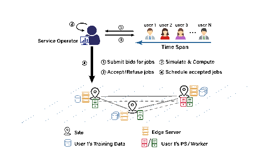
Fig. 1. System of unbiased distributed learning.
图 1. 无偏分布式学习系统。
原 PDF p.3Service Operator: The service operator serves as the owner and manager of resources in the edge distributed learning system. The system involves R geo-distributed “sites”, e.g., an edge cloudlet or edge server [29]. Each site collects and provides training data for UDL jobs, which are targeted at different smart applications, such as, intelligent video surveillance and smart city. In addition, each site r can offer $C_r^k$ units of type-$k$ resource and connects with other sites by edge networks. Let K denote the number of resource types, e.g., GPU, CPU and disk storage. Since radio resources in the edge network are scarce and expensive, as a result, the operator imposes a limit of the total data rate for transmission, denoted by B .
服务运营商。 服务运营商拥有并管理边缘分布式学习系统中的资源。系统包含 $R$ 个地理分散的“站点”，例如边缘云端小站或边缘服务器[29]。每个站点为面向智能视频监控、智慧城市等应用的 UDL 任务收集并提供训练数据。此外，每个站点 $r$ 可提供 $C_r^k$ 单位的 $k$ 类资源，并通过边缘网络连接其他站点。令 $K$ 表示资源类型数，例如 GPU、CPU 和磁盘存储。由于边缘网络中的无线资源稀缺且昂贵，运营商将总数据传输速率限制为 $B$。
原 PDF p.3When a new job arrives, the service provider has to make multiple decisions, such as: i) whether accept this job; ii) where the PS of this job should be placed; iii) the allocated number of workers for this job; iv) how to transmit the training data among edge sites for this job.
新任务到达时，服务提供商需要作出多项决策：i）是否接受该任务；ii）将该任务的 PS 放在哪个位置；iii）为该任务分配多少工作节点；iv）如何在边缘站点之间传输该任务的训练数据。
原 PDF p.3Users: Users submit their bids for training jobs once they arrive. For ease of analysis, suppose one user submit one job at a time. Thus, we do not distinguish a user and a job below. User $i$ submits bid information, which is a tuple $\Pi_i$
用户。 用户在训练任务到达时提交出价。为便于分析，假设每个用户一次只提交一个任务，以下不再区分用户和任务。用户 $i$ 提交的出价信息为元组 $\Pi_i$：
原 PDF p.3where $a_i$ indicates the arrival time of job $i$, $f_i(\cdot)$ denotes the specific utility function of job $i$, which is non-negative and non-increasing with its execution duration $(\hat t_i-a_i)$ [34], [35]. Generally, one UDL job’s utility is customized by its user according to the latency-sensitive requirement (i.e., completion time) and the characteristics of its workload. To clarity, assuming that data chunk is set to be the unit of data. For job $i$, $D_i^r$ represents the required data size (the number of data chunks) in site $r$. For good performance, all data needs to be trained for $E_i$ epochs. $w_i^k$ ($s_i^k$) represents the amount of type-$k$ resource occupied by one worker (PS) of job $i$, $\forall k\in K$. Let $P_i$ indicate the processing capacity of job $i$’s worker, i.e., the number of data chunks job $i$’s worker can process in one time slot.
其中，$a_i$ 表示任务 $i$ 的到达时间；$f_i(\cdot)$ 表示任务 $i$ 的特定效用函数，该函数非负，并随任务执行时长 $\hat t_i-a_i$ 增加而不增[34]、[35]。通常，用户会根据时延敏感要求（即完成时间）和工作负载特点定制 UDL 任务的效用函数。为清晰起见，假设数据块是数据单位。对任务 $i$，$D_i^r$ 表示站点 $r$ 上所需的数据量（数据块数）。为获得良好性能，所有数据都需要训练 $E_i$ 轮。$w_i^k$（$s_i^k$）表示任务 $i$ 的一个工作节点（PS）占用的 $k$ 类资源量，$k\in K$。令 $P_i$ 表示任务 $i$ 的工作节点处理能力，即任务 $i$ 的一个工作节点每个时间槽可处理的数据块数。
原 PDF p.3Parameter Server Architecture: In order to reduce bandwidth consumption, we adopt the data parallel training and the PS architecture [36], rather than requiring all training data across geo-distributed sites to train centrally [37]. Workers and PSs are configured as virtual machines (VMs) or containers. Assuming that each UDL job is allocated with one PS, which in practice can represent various PS instances within one site. We use synchronous training to guarantee the model convergence [38] due to the fact that synchronous training can obtain a model with comparatively higher level of accuracy compared to asynchronous training [39]. Typically, one time slot will be longer than a training epoch in length, so one can perform training at each time slot. One time slot, for instance, will be for 30 minutes or more. To meet the demand for training data, at beginning of each time slot, one needs to redistribute training data (workload) among sites for processing at the current time slot. For adopting Mini-batch Gradient Descent [40], each data chunk will be split up into some equal-sized mini-batches. Iteratively, workers calculate and transmit model gradients (directions of changes) to the PS. The PS updates the model after received all workers’ model parameters, and then sends back to all workers. Once all mini-batches have been processed for the predefined number of epochs, workers will further compute gradients using the subsequent mini-batch. Let $\lambda_i$ denote the total size (MB) of the parameter transmitted between a worker and the PS per slot.
参数服务器架构。 为降低带宽消耗，本文采用数据并行训练和 PS 架构[36]，而不是将地理分散站点上的所有训练数据集中到一处训练[37]。工作节点和 PS 以虚拟机（VM）或容器的形式配置。假设每个 UDL 任务分配一个 PS；实际中，这可以代表同一站点内的多个 PS 实例。本文采用同步训练来保证模型收敛[38]，因为与异步训练相比，同步训练通常能获得准确度更高的模型[39]。一个时间槽通常长于一个训练轮次，因此每个时间槽都可以执行训练；例如，一个时间槽可以是 30 分钟或更长。为满足训练数据需求，每个时间槽开始时都要把训练数据（工作负载）重新分配到各站点，以便在当前时间槽处理。采用小批量梯度下降（Mini-batch Gradient Descent）[40]时，每个数据块会被拆分成若干等大小的小批次。工作节点迭代计算模型梯度（变化方向）并发送给 PS。PS 收到所有工作节点的模型参数后更新模型，再将参数发回所有工作节点。预设轮数的所有小批次处理完后，工作节点继续使用后续小批次计算梯度。令 $\lambda_i$ 表示每个时间槽内工作节点与 PS 之间传输参数的总大小（MB）。
原 PDF p.32 Different from traditional modes that DL job associates with its own input dataset, UDL jobs’ datasets are collected from edge sites, to support the unbiasedness of DL model [3].
Auction Preliminary: Here, to make everyone happy in the long run, we focus on the whole system’s overall utilities, that is, aiming to achieve social welfare maximization. To achieve this, eliciting truthful information from users is extremely necessary. In practice, due to the egocentric characteristic of users, they will attempt to maximize their own payoffs. More specifically, to obtain a higher payoff, users may try to lie about the real valuation (function) of their job bids in terms of completion time, denoted as $v_i(\cdot)$. Here, we will introduce the following definitions for auction design in terms of truthfulness and social welfare.
拍卖预备知识。 为了实现长期整体效用最大化，本文关注整个系统的效用，即社会福利最大化。为此，必须从用户处获得真实信息。现实中，用户具有利己倾向，会试图最大化自身收益。更具体地说，为提高收益，用户可能会在出价中谎报任务完成时间对应的真实估值函数 $v_i(\cdot)$。下面给出拍卖设计中的真实性和社会福利定义。
原 PDF p.4Definition 1 (Truthful Auction): An auction is truthful if and only if every user’s payoff is maximized by reporting its true valuation, i.e., for all $f_i(\cdot)\ne v_i(\cdot)$, $u_i(v_i(\cdot))\ge u_i(f_i(\cdot))$.
定义 1（真实性拍卖）。 当且仅当每个用户通过报告真实估值可使自身收益最大时，拍卖是真实的；即对所有 $f_i(\cdot)\ne v_i(\cdot)$，均有 $u_i(v_i(\cdot))\ge u_i(f_i(\cdot))$。
原 PDF p.4Definition 2 (Social Welfare): Note that the payoff of job $i$ is $u_i(f_i(\cdot))=v_i(\cdot)-p_i$ if its bid is accepted, and 0 otherwise. The operator’s revenue is the total payment of all accepted jobs, i.e., $\sum_{i\in I}p_ix_i$. Here, the social welfare of the auction is defined as the aggregate utilities of the operator and users, and equals
定义 2（社会福利）。 若任务 $i$ 的出价被接受，其收益为 $u_i(f_i(\cdot))=v_i(\cdot)-p_i$；否则为 0。运营商收入是所有被接受任务的总付款，即 $\sum_{i\in I}p_ix_i$。拍卖的社会福利定义为运营商和用户的效用总和，因此等于
原 PDF p.4B. Problem Formulation
B. 问题表述
To clarify, we define the decisions made by the operator as: i) $x_i$, a binary variable which means whether job $i$’s bid is accepted ($x_i=1$) or not ($x_i=0$); ii) $z_i^r(t)$, a binary variable which indicates whether job $i$’s PS is placed in site $r$ at time slot $t$ or not; iii) $g_i^r(t)\in\mathbb N^+$, the allocated number of workers for job $i$ in site $r$ at $t$, $\forall i\in I,\forall r\in R$; iv) $h_i^{rr\prime}(t)\in\mathbb N^+$, the number of data chunks for job $i$ transmitted from site $r$ to $r\prime$ at time $t$; v) $p_i\ge0$, the required payment for user $i$ once the operator accepts his bid ($x_i=1$). The social welfare maximization problem can be expressed as follows under truthful bidding ($v_i(\cdot)=f_i(\cdot)$).
为明确起见，运营商的决策变量定义如下：i）$x_i$ 为二元变量，表示是否接受任务 $i$ 的出价（$x_i=1$ 表示接受，$x_i=0$ 表示拒绝）；ii）$z_i^r(t)$ 为二元变量，表示时间槽 $t$ 是否将任务 $i$ 的 PS 放置在站点 $r$；iii）$g_i^r(t)\in\mathbb N^+$，表示时间槽 $t$ 在站点 $r$ 为任务 $i$ 分配的工作节点数量；iv）$h_i^{rr'}(t)\in\mathbb N^+$，表示时间 $t$ 从站点 $r$ 向站点 $r'$ 传输的任务 $i$ 数据块数量；v）$p_i\ge0$，表示运营商接受用户 $i$ 的出价（$x_i=1$）后所需的付款。假设用户如实申报，即 $v_i(\cdot)=f_i(\cdot)$，则社会福利最大化问题如下：
原 PDF p.4subject to
约束为
原 PDF p.4Constraint (2a) ensures that the amount of transmitted data equals the amount of job i’s training data. Specially, $h_i^{rr}(t)$ denotes the local training data in site r at t, which means it does not need to be transmitted at t. Constraint (2b) guarantees that job i’s workers deployed in site $r\prime$ at t is sufficient for handling $E_i$ epochs of data in site $r\prime$ . Constraint (2c) indicates that each job has one PS if accepted. Constraint (2d) illustrates that the amount of training data transmitted and the amount of parameter transmitted between sites limited by the data rate B . Given the edge network’s inherent dynamic conditions like interference and fading, our constraint (2d) focuses on data volume, providing a more stable metric than uncontrollable traditional bandwidth. Utilizing data volume allows us to indirectly constrain on associated physical resources, such as bandwidth or transmission power, ensuring that the system operates within feasible and realistic limits. Here, we consider that there is no need to transmit parameters if the PS and workers are deployed in the same site. We specify this case by using $\mathbb I(z_i^r(t)=0)$, where $\mathbb I(\cdot)$ is an indicator function. The resource constraint of sites for deploying workers and PS is demonstrated by (2e). The completion time of one job is defined in constraint (2f), that is, defining the completion time of a job as the largest time slot that this job still need workers to train.
约束 (2a) 保证传输的数据总量等于任务 $i$ 的训练数据量。特别地，$h_i^{rr'}(t)$ 表示时间槽 $t$ 站点 $r$ 上的本地训练数据，因此该部分数据无需在时间槽 $t$ 传输。约束 (2b) 保证任务 $i$ 在站点 $r'$ 部署的工作节点足以处理站点 $r'$ 中数据的 $E_i$ 轮训练。约束 (2c) 表示每个被接受的任务恰有一个 PS。约束 (2d) 限制训练数据传输量和站点间参数传输量不超过数据率上限 $B$。考虑到边缘网络中的干扰和衰落等动态因素，约束 (2d) 直接限制数据量，比不可控的传统带宽指标更稳定。以数据量间接约束带宽或传输功率等相关物理资源，可使系统运行在可行且现实的范围内。若 PS 和工作节点部署在同一站点，则不需要传输参数；通过指示函数 $\mathbb I(z_i^r(t)=0)$ 表示这种情况。约束 (2e) 描述站点部署工作节点和 PS 的资源约束。约束 (2f) 将任务完成时间定义为该任务仍需工作节点训练的最晚时间槽。
原 PDF p.4Challenges: Problem (2) is a mixed integer nonlinear programming (MINLP), which is NP-hard [41], [42]. This statement can be easily supported by the following reformulated problem (3), which can be transformed from a classical Knapsack problem in a polynomial time. Furthermore, the problem (2) involves integer variables which are dependent on each other, and a non-conventional constraint (2f). In this regard, there is a need to make online decisions for deploying workers and PSs, and transmitting data, without any future information.
难点。 问题 (2) 是混合整数非线性规划（MINLP），属于 NP 难问题[41]、[42]。下面的重构问题 (3) 可说明这一点：它可在多项式时间内由经典背包问题转换得到。此外，问题 (2) 中整数变量彼此依赖，并包含非常规约束 (2f)。因此，在没有任何未来信息的情况下，必须在线决定工作节点和 PS 的部署以及数据传输。
原 PDF p.5TABLE I. LIST OF NOTATIONS
表 I. 符号列表。
原 PDF p.3| Symbol | Description |
|---|---|
| $I$ | # of jobs |
| $T$ | # of time slots |
| $a_i$ | job $i$’s arrival time |
| $\hat t_i$ | completion time of job $i$ |
| $x_i$ | accept job $i$ or not |
| $f_i(\cdot)$ | job $i$’s utility function |
| $P_i$ | processing capacity of job $i$’s worker |
| $D_i^r$ | the size of the training data for job $i$ in site $r$ |
| $B$ | overall volume (data rate) of the amount of data transmission per time slot |
| $z_i^r(t)$ | whether job’s PS is placed in site $r$ at $t$ |
| $g_i^r(t)$ | # of job $i$’s workers in site $r$ in $t$ |
| $C_r^k$ | the capacity of type-$k$ resource in site $r$ |
| $\lambda_i$ | the size (MB) of the parameter exchanged between a worker and the PS of job $i$ per time slot |
| $h_i^{rr\prime}(t)$ | the size of the training data of job $i$ transmitted from site $r$ to site $r\prime$ at $t$ |
| $\theta$ | the size (MB) of one data chunk |
| $w_i^k$ ($s_i^k$) | the amount of type-$k$ resource occupied by one worker (PS) of job $i$ |
| $x_{il}$ | select schedule $l$ for job $i$ or not |
| $\psi_{il}(t)$ | the amount of data transmitted between site $r$ and $r\prime$ at $t$ in job $i$’s schedule $l$ |
| $\phi_{il}^{r,k}(t)$ | the amount of type-$k$ resource in site $r$ currently occupied by job $i$ according to its schedule $l$ |
| $\rho(t)$ | the size of data transmitted at time $t$ |
| $\eta_r^k(t)$ | the amount of allocated type-$k$ resource of site $r$ at $t$ |
| $\alpha(t)$ | unit price for data transmission (MB) at time $t$ |
| $\beta_r^k(t)$ | unit price of the type-$k$ resource of site $r$ at $t$ |
| $M_i^r(t)$ | remaining size of training data of job $i$ in site $r$ at $t$ |
| $\gamma_d$ ($\gamma_k$) | the base of the data transmission (resources) price functions |
| 符号 | 含义 |
|---|---|
| $I$ | 任务数量 |
| $T$ | 时间槽数量 |
| $a_i$ | 任务 $i$ 的到达时间 |
| $x_i$ | 是否接受任务 $i$ |
| $f_i(\cdot)$ | 任务 $i$ 的效用函数 |
| $P_i$ | 任务 $i$ 的工作节点处理能力 |
| $D_i^r$ | 任务 $i$ 在站点 $r$ 的训练数据量 |
| $B$ | 每个时间槽的数据传输总量上限 |
| $z_i^r(t)$ | 时间槽 $t$ 是否在站点 $r$ 放置任务 $i$ 的 PS |
| $g_i^r(t)$ | 时间槽 $t$ 站点 $r$ 的任务 $i$ 工作节点数 |
| $C_r^k$ | 站点 $r$ 的 $k$ 类资源容量 |
| $\lambda_i$ | 每个时间槽中任务 $i$ 的工作节点与 PS 间交换的参数数据量（MB） |
| $h_i^{rr'}(t)$ | 时间槽 $t$ 从站点 $r$ 向 $r'$ 传输的任务 $i$ 训练数据量 |
| $\theta$ | 一个数据块的大小（MB） |
| $w_i^k,s_i^k$ | 任务 $i$ 的一个工作节点、一个 PS 占用的 $k$ 类资源量 |
| $\hat t_i$ | 任务 $i$ 的完成时间 |
| $\psi_i^l(t)$ | 任务 $i$ 按调度 $l$ 在时间槽 $t$ 传输的数据量 |
| $\phi_{il}^{r,k}(t)$ | 任务 $i$ 按调度 $l$ 在时间槽 $t$ 于站点 $r$ 占用的 $k$ 类资源量 |
| $\rho(t)$ | 时间槽 $t$ 已使用的数据传输量（数据与参数） |
| $\eta_r^k(t)$ | 时间槽 $t$ 站点 $r$ 已分配的 $k$ 类资源量 |
| $\alpha(t)$ | 时间槽 $t$ 的数据传输单位价格 |
| $\beta_r^k(t)$ | 时间槽 $t$ 站点 $r$ 的 $k$ 类资源单位价格 |
| $\gamma_d,\gamma_k$ | 数据传输价格函数、$k$ 类资源价格函数的基数 |
$x_{il}$: select schedule $l$ for job $i$ or not. $M_i^r(t)$: remaining size of training data of job $i$ in site $r$ at $t$.
【原表 I 补全】$x_{il}$：是否为任务 $i$ 选择调度 $l$。$M_i^r(t)$：时间槽 $t$ 中任务 $i$ 在站点 $r$ 剩余的训练数据量。
原 PDF p.3IV. ALGORITHM DESIGN
IV. 算法设计
In this section, we develop an auction-based scheduling framework, Eris, to schedule UDL jobs. Eris aims to achieve social welfare maximization. The following is the main idea.
本节提出用于调度 UDL 任务的拍卖式调度框架 Eris，目标是最大化社会福利。主要思路如下。
原 PDF p.5i. In Section IV-A, we reformulate problem (2) into an integer linear program (ILP) by introducing exponential number of variables. Then, we construct its dual problem to handle the primal variables. By applying the theory of complementary slackness, we convert our goal to compute each job’s payoff, which means jobs with positive payoff will be accepted, otherwise rejected. The computation of jobs’ payoff is based on resource pricing and its corresponding assigned resources. ii. In Section IV-B, we analyze the traditional pricing mechanisms in the market. Then we design various tailored price functions for resources based on market rules. iii. In Section IV-C, we discuss how to deploy workers and the PS for one job to reduce resource consumption. Eris further decomposes problem (7) to a series of one-shot problems (8). A dynamic programming (DP) algorithm is applied to divide the total training data into time slots within the range $[a_i,\hat t_i]$. For each one-shot problem, Eris conducts data transmission according to a tailored metric. Then Eris deploys workers in a greedy fashion according to the resource cost of one worker. Finally, the PS is placed to the site which has the maximum number of workers to reduce the communication cost.
- 在第 IV-A 节，通过引入指数数量的变量，将问题 (2) 重构为整数线性规划（ILP），再构造对偶问题处理原始变量。利用互补松弛理论，将目标转化为计算每个任务的收益：收益为正的任务会被接受，否则会被拒绝。收益计算依赖资源定价及任务获得的资源分配。
- 在第 IV-B 节分析传统市场定价机制，并根据市场规则设计多种资源定价函数。
- 在第 IV-C 节讨论如何部署单个任务的工作节点和 PS 以降低资源消耗。Eris 将问题 (7) 进一步分解为一系列单时间槽问题 (8)，再用动态规划将总训练数据划分到 $[a_i,\hat t_i]$ 内的时间槽。对每个单时间槽问题，Eris 根据定制指标传输数据，按单个工作节点的资源成本贪心部署工作节点，最后将 PS 放在工作节点数量最多的站点以降低通信成本。
A. Problem Reformulation and Auction Framework
A. 问题重构与拍卖框架
Recall that searching for a feasible schedule for each job is the ultimate goal of the service operator. Therefore, to address problem (2), we consider reformulating it into the following 0-1 integer linear program (ILP) by encoding three types of integer variables $z_i^r(t)$, $g_i^r(t)$ and $h_i^{rr\prime}(t)$ into one schedule variable $l$.
运营商的最终目标是为每个任务找到可行调度。为处理问题 (2)，本文将三类整数变量 $z_i^r(t)$、$g_i^r(t)$ 和 $h_i^{rr'}(t)$ 编码进单一调度变量 $l$，重构为以下 0-1 整数线性规划：
原 PDF p.5subject to
约束为
原 PDF p.5In ILP (3), schedule $l$ represents one deployment result for job $i$, which consists of integer variables $z_i^r(t)$, $g_i^r(t)$ and $h_i^{rr\prime}(t)$. $L_i$ denotes the set containing job $i$’s all feasible schedules that satisfies constraint (2a)–(2c) and (2f). For consistency, binary variable $x_i$ is reshaped to $x_{il}$, which denotes whether select job $i$’s schedule $l$ or not. And $\hat t_{il}$ represents the completion time of job $i$ according to schedule $l$. Likewise, $\psi_{il}(t)$ represents the amount of data transmitted between site $r$ and $r\prime$ at $t$ in job $i$’s schedule $l$, i.e.,
在 ILP (3) 中，调度 $l$ 表示任务 $i$ 的一个部署结果，由整数变量 $z_i^r(t)$、$g_i^r(t)$ 和 $h_i^{rr'}(t)$ 构成。$L_i$ 表示任务 $i$ 所有可行调度的集合；这些调度满足约束 (2a)–(2c) 和 (2f)。为保持一致，将二元变量 $x_i$ 改写为 $x_{il}$，表示是否选择任务 $i$ 的调度 $l$；$\hat t_{il}$ 表示任务 $i$ 按调度 $l$ 的完成时间。$\psi_{il}(t)$ 表示调度 $l$ 下任务 $i$ 在时间槽 $t$ 从站点 $r$ 向 $r'$ 传输的数据量：
原 PDF p.5$\phi_{il}^{r,k}(t)$ indicates the amount of type-$k$ resource in site $r$ currently occupied by job $i$ according to its schedule $l$, i.e.,
$\phi_{il}^{r,k}(t)$ 表示任务 $i$ 按调度 $l$ 在时间槽 $t$ 于站点 $r$ 占用的 $k$ 类资源量：
原 PDF p.5In addition, variables $z_{il}^r(t)$, $g_{il}^r(t)$ and $h_{il}^{rr\prime}(t)$ represent the corresponding value within schedule $l$, respectively. Constraint (3a) and (3b) are equivalent to constraint (2d) and (2e), respectively. Then constraint (3c) and (3d) are corresponding to constraints (2a)–(2c). Thus, ILP (3) is equivalent to problem (2).
变量 $z_{il}^r(t)$、$g_{il}^r(t)$ 和 $h_{il}^{rr'}(t)$ 分别表示调度 $l$ 中相应变量的取值。约束 (3a)、(3b) 分别等价于约束 (2d)、(2e)；约束 (3c)、(3d) 对应约束 (2a)–(2c)。因此，ILP (3) 与问题 (2) 等价。
原 PDF p.5Dual Problem: Obviously, the number of feasible schedules of each job is potentially exponential because of combinatorial nature of these variables. To tackle the exponential scale of introduced variables, we construct its dual problem (4) by relaxing the binary variable $x_{il}$ to $x_{il}\ge0$. Dual variables $\alpha(t)$, $\beta_r^k(t)$ and $\mu_i$ are associated with constraint (3a), (3b) and (3c), respectively.
对偶问题。 每个任务的可行调度数量可能因组合结构而呈指数增长。为处理引入变量的指数规模，本文将二元变量 $x_{il}$ 放宽为 $x_{il}\ge0$，构造对偶问题 (4)。对偶变量 $\alpha(t)$、$\beta_r^k(t)$ 和 $\mu_i$ 分别对应约束 (3a)、(3b) 和 (3c)：
原 PDF p.5subject to
约束为
原 PDF p.5Design Rationale: By interpreting the dual variable $\alpha(t)$ as the unit price for data transmission (MB) at $t$, $\sum_{t\in T}\psi_{il}(t)\alpha(t)$ indicates the data transmission cost of job $i$. Similarly, $\sum_{t\in T}\sum_{r\in R}\sum_{k\in K}\phi_{il}^{r,k}(t)\beta_r^k(t)$ represents the total cost of resources occupied by job $i$ with schedule $l$, when $\beta_r^k(t)$ recognizes as the unit price of the type-$k$ resource of site $r$ at time $t$. So the right hand side (RHS) of (4a) means job $i$’s utility minus the overall cost. In this regard, $\mu_i$ represents the received payoff of job $i$ if it is accepted. To minimize the objective of the dual problem, we set the dual variable $\mu_i$ to be the maximum value between 0 and the RHS of (4a) based on the optimal schedule $l^*$.
设计依据。 将对偶变量 $\alpha(t)$ 解释为时间槽 $t$ 的单位数据传输价格，则 $\sum_{t\in T}\psi_{il}(t)\alpha(t)$ 是任务 $i$ 的数据传输成本。类似地，$\sum_{t\in T}\sum_{r\in R}\sum_{k\in K}\phi_{il}^{r,k}(t)\beta_r^k(t)$ 是任务 $i$ 按调度 $l$ 占用资源的总成本，其中 $\beta_r^k(t)$ 是时间槽 $t$ 站点 $r$ 的 $k$ 类资源单位价格。因此，约束 (4a) 右侧（RHS）表示任务 $i$ 的效用减去总成本。$\mu_i$ 表示任务 $i$ 被接受后获得的收益。为了最小化对偶问题目标，根据最优调度将 $\mu_i$ 设为 0 与约束 (4a) 所有 RHS 中的最大值两者的较大者：
原 PDF p.5If $\mu_i>0$, the operator accepts and allocates resources for job $i$ according to its schedule $l^*$ ($x_{il^*}=1$); otherwise, the operator rejects ($x_{il}=0,\forall l\in L_i$). The explanation is that jobs’ value can cover the overall cost, which ensures the jobs’ owners are willing to train their jobs. Besides, the operator attempts to accept those jobs with larger value and less resource consumption.
若 $\mu_i>0$，运营商按最优调度 $l^*$ 接受任务 $i$ 并分配资源（$x_{il^*}=1$）；否則拒绝该任务（$x_{il}=0,\forall l\in L_i$）。其解释是，任务估值可以覆盖总成本，使任务所有者愿意训练任务；运营商也因此倾向于接收价值更高而资源消耗更少的任务。
原 PDF p.6Algorithm 1: Auction Framework Eris.
算法 1：拍卖框架 Eris。
原 PDF p.6| Line | Operation |
|---|---|
| Input | $T,C_r^k,B,\forall k\in K,\forall r\in R$ |
| Output | $x_i,g_i^r(t),z_i^r(t),h_i^{rr\prime}(t),\forall i\in I,\forall r,r\prime\in R,\forall t\in T$ |
| 1 | Initialize $g_i^r(t)=0,z_i^r(t)=0,h_i^{rr\prime}(t)=0,\rho(t)=0,\eta_r^k(t)=0,\alpha(t)=\alpha(0),\beta_r^k(t)=\beta_r^k(0),\forall i,r,r\prime,k,t$ |
| 2 | for $i=1,2,\ldots,I$ do /new jobs/ |
| 3 | Set $(l^*,\mu_i)=SA(a_i,E_i,\{D_i^r\}_{\forall r},\{\rho(t)\}_{\forall t},\{\eta_r^k(t)\}_{\forall r,k,t})$ |
| 4 | if $\mu_i>0$ then |
| 5 | Update $\rho(t)=\rho(t)+\psi_i(t),\eta_r^k(t)=\eta_r^k(t)+\phi_i^{r,k}(t),\alpha(t)=\alpha(\rho(t)),\beta_r^k(t)=\beta_r^k(\eta_r^k(t)),\forall r,r\prime,k,t$ |
| 6 | Set $x_i=1$ and deploy job $i$ according to schedule $l^*$ |
| 7–8 | else; Set $x_i=0$ and reject job $i$ |
| 9–10 | end if; end for |
| 行 | 操作 |
|---|---|
| 输入 | $T,C_r^k,B,\forall k\in K,\forall r\in R$ |
| 输出 | $x_i,g_i^r(t),z_i^r(t),h_i^{rr'}(t)$，对所有 $i,r,r',t$ |
| 1 | 初始化：$g_i^r(t)=z_i^r(t)=h_i^{rr'}(t)=0$，$\rho(t)=0$，$\eta_r^k(t)=0$，$\alpha(t)=\alpha(0)$，$\beta_r^k(t)=\beta_r^k(0)$。 |
| 2 | 对 $i=1,2,\ldots,I$ 逐个处理新到达任务： |
| 3 | $(l^*,\mu_i)=SA(a_i,E_i,\{D_i^r\}_{\forall r},\{\rho(t)\}_{\forall t},\{\eta_r^k(t)\}_{\forall r,k,t})$。 |
| 4 | 若 $\mu_i>0$： |
| 5 | 更新 $\rho(t)=\rho(t)+\psi_i(t)$，$\eta_r^k(t)=\eta_r^k(t)+\phi_i^{r,k}(t)$，$\alpha(t)=\alpha(\rho(t))$，$\beta_r^k(t)=\beta_r^k(\eta_r^k(t))$。 |
| 6 | 令 $x_i=1$，并按调度 $l^*$ 部署任务 $i$。 |
| 7–8 | 否则令 $x_i=0$，拒绝任务 $i$。 |
| 9–10 | 结束条件判断和任务循环。 |
Auction Framework: The main workflow of Eris is presented in Algorithm 1. The subroutine Algorithm 2 computes the optimal schedule $l^*$ for each newly arrived job (Line 3). If the value of $\mu_i$ is larger than 0, the operator accepts the job ($x_i=1$) and updates the current price of resources or data by using well-designed price functions (lines 4–7), discussed in Section IV-B.
在算法 1 中，子程序算法 2 为每个新到达任务计算最优调度 $l^*$（第 3 行）。若收益 $\mu_i$ 大于 0，运营商接受任务（$x_i=1$），并按精心设计的价格函数更新当前资源或数据价格（第 4–7 行），详见第 IV-B 节。
原 PDF p.6B. Price Function Design
B. 价格函数设计
Before finding the optimal schedule for jobs, let us first discuss the marginal price of data and resources, i.e., variables $\alpha(t)$ and $\beta_r^k(t)$. In market economics, resource price always increases with the amount of resources occupied. To be specific, when there are enough resources available, resource prices should be decreased to encourage consumption. When demand for a resource exceeds supply, service providers will inevitably raise the price in order to relieve the strain on supply. In this paper, we adopt an exponential function as the basic expression to depict this market rule. Here, let $\rho(t)$ denote the amount of data transmitted at time t, i.e.,
在计算任务的最优调度之前，先考虑数据和资源的边际价格，即变量 $\alpha(t)$ 和 $\beta_r^k(t)$。在市场经济中，资源价格会随资源占用量增加。具体来说，当资源充足时，应降低资源价格以鼓励消耗；当资源需求超过供给时，服务提供商会提高价格以缓解供给压力。本文用指数函数表达这一市场规则。令 $\rho(t)$ 表示时间槽 $t$ 已传输的数据量，即
原 PDF p.6And $I_t$ indicates a set of accepted jobs before job $i$ arrived. Additionally, $\eta_r^k(t)$ represents the amount of allocated type-$k$ resource of site $r$ at time $t$, i.e.,
其中 $I_t$ 表示任务 $i$ 到达前已接受任务的集合。另令 $\eta_r^k(t)$ 表示时间槽 $t$ 站点 $r$ 已分配的 $k$ 类资源量，即
原 PDF p.6Therefore, the price functions of data transmission/resources can be formulated as
于是数据传输和资源价格函数定义为
原 PDF p.6Here, let us discuss several characteristics of our tailored price functions. If there are no resources used (i.e., $\rho(t)=0$) or no transmitted data (i.e., $\eta_r^k(t)=0$), then $\alpha(t)=\beta_r^k(t)=0,\forall r,\forall k,\forall t$. In this case, all jobs would be accepted, to incentive more people to submit their jobs in this auction, and increase the possibility of accepting jobs with larger utility for the operator. If there are no available resources or no data budget left, $\alpha(t)=\gamma_d-1,\beta_r^k(t)=\gamma_k-1,\forall r,\forall k,\forall t$. This means that these two values should be large enough to avoid any jobs from being accepted by the operator, i.e., $f_i(\hat t_{il}-a_i)-\sum_{t\in T}(\gamma_d-1)\psi_{il}(t)-\sum_{t\in T}\sum_{r\in R}\sum_{k\in K}(\gamma_k-1)\phi_{il}^{r,k}(t)<0$. A feasible solution is to set
若没有资源被占用（原文括注 $\rho(t)=0$）或没有数据传输（原文括注 $\eta_r^k(t)=0$），则 $\alpha(t)=\beta_r^k(t)=0$；此时所有任务都可以被接受，以鼓励更多用户参与，并增加运营商接受高效用任务的机会。若资源已无余量或数据预算耗尽，则 $\alpha(t)=\gamma_d-1$、$\beta_r^k(t)=\gamma_k-1$。原文接着要求这些值足够大，以避免运营商接受任何任务，即要求任务效用减去按满负荷价格计算的资源成本为负。原文给出的可行条件为
原 PDF p.6by assuming that $\gamma_k-1\ge1,\gamma_d-1\ge1$, i.e., $\frac{f_i(\hat t_{il}-a_i)}{\sum_{t\in T}\psi_{il}(t)}\ge1$, $\frac{f_i(\hat t_{il}-a_i)}{\sum_{r\in R}\sum_{k\in K}\sum_{t\in T}\phi_{il}^{r,k}(t)}\ge1$, $\forall i$. It is reasonable because there are no sufficient resources to handle more jobs. Moreover, such assumptions can prevent users from submitting jobs and enable the operator to escape peak load quickly.
并假设 $\gamma_d-1\ge1$、$\gamma_k-1\ge1$，同时写出相应的效用/资源量比值至少为 1 的条件。此处如何由这些假设推出上述价格条件，原文没有展开。作者的动机是：资源不足以继续处理任务时，提高价格可以阻止新任务进入，帮助运营商快速脱离高峰负载。
原 PDF p.6C. Sub-Problem of Finding Schedule l
C. 求解调度 $l$ 的子问题
The sub-problem of finding an optimal schedule l ∗ for each job i can be expressed as follows.
任务 $i$ 的最优调度子问题写为
原 PDF p.6subject to
(2a)–(2c), (2f)–(2i), where $x_i=1$. Constraint (7a) and constraint (7b) are equivalent to constraint (3a) and (3b), respectively. To solve problem (7), we consider fixing and enumerating the completion time $\hat t_i$ to simplify problem (7). Then we further apply DP to divide the total workload $D_i$ (i.e., $\sum_rD_i^r$) into $D_i(t),\forall t\in[a_i,\hat t_i]$. Consequently, problem (7) can be simplified as a series of following one-shot problems.
以及约束 (2a)–(2c)、(2f)–(2i)，其中 $x_i=1$。约束 (7a)、(7b) 分别等价于约束 (3a)、(3b)。为求解问题 (7)，先固定并枚举完成时间 $\hat t_i$，再用动态规划把总工作负载 $D_i=\sum_rD_i^r$ 划分到 $t\in[a_i,\hat t_i]$ 的各个时间槽，得到一系列单时间槽子问题：
原 PDF p.6subject to (7a)–(7b), (2b)–(2c), (2g)–(2i), where $x_i=1$.
满足 (7a)–(7b)、(2b)–(2c)、(2g)–(2i)，其中 $x_i=1$。
原 PDF p.6Algorithm 2: Scheduling Algorithm SA.
算法 2：调度算法 SA。
原 PDF p.7| Line | Operation |
|---|---|
| Input | $a_i,E_i,D_i^r,\rho(t),\eta_r^k(t),\forall k\in K,\forall r\in R,\forall t\in T$ |
| Output | $l^*,\mu_i$ |
| 1 | Initialize $l^*=\varnothing,\mu_i=0$ |
| 2 | for $\hat t_i=a_i$ to $T$ do |
| 3 | $(\mathrm{cost}^*,l)=DPC(\hat t_i,\sum_{r\in R}D_i^r)$ |
| 4–6 | if $\mu_i<f_i(\hat t_i-a_i)-\mathrm{cost}^*$ then; $\mu_i=f_i(\hat t_i-a_i)-\mathrm{cost}^*,l^*=l$; end if |
| 7 | end for |
| 8 | Return $l^*,\mu_i$ |
| 9 | function $DPC(T_i,D_i)$ |
| 10 | $\mathrm{cost}_i=\infty,l=\varnothing$ |
| 11 | for $d=0$ to $D_i$ do |
| 12 | $(\mathrm{cost}_t,\{g_i^r(T_i)\}_{\forall r},\{z_i^r(T_i)\}_{\forall r},\{h_i^{rr\prime}(T_i)\}_{\forall r,r\prime})=DPC\_T(T_i,d)$ |
| 13 | $(\mathrm{cost},l\prime)=DPC(T_i-1,D_i-d)$ |
| 14–16 | if $\mathrm{cost}_i>\mathrm{cost}_t+\mathrm{cost}$ then; $\mathrm{cost}_i=\mathrm{cost}_t+\mathrm{cost},l=l\prime\cup\{\{g_i^r(T_i)\}_{\forall r},\{z_i^r(T_i)\}_{\forall r},\{h_i^{rr\prime}(T_i)\}_{\forall r,r\prime}\}$; end if |
| 17–19 | end for; Return $\mathrm{cost},l$; end Function |
| 行 | 操作 |
|---|---|
| 输入 | $a_i,E_i,D_i^r,\rho(t),\eta_r^k(t)$，对所有 $r,k,t$ |
| 输出 | $l^*,\mu_i$ |
| 1 | 初始化 $l^*=\varnothing,\mu_i=0$。 |
| 2 | 对完成时间候选 $\hat t_i=a_i$ 到 $T$ 逐一枚举： |
| 3 | $(\mathrm{cost}^*,l)=DPC(\hat t_i,\sum_{r\in R}D_i^r)$。 |
| 4–6 | 若 $\mu_i<f_i(\hat t_i-a_i)-\mathrm{cost}^*$，则更新 $\mu_i=f_i(\hat t_i-a_i)-\mathrm{cost}^*$、$l^*=l$。 |
| 7 | 结束对候选完成时间的枚举。 |
| 8 | 返回 $l^*,\mu_i$。 |
| 9 | 函数 $DPC(T_i,D_i)$： |
| 10 | 初始化 $\mathrm{cost}_i=\infty,l=\varnothing$。 |
| 11 | 对 $d=0$ 到 $D_i$ 枚举： |
| 12 | $(\mathrm{cost}_t,\{g_i^r(T_i)\}_r,\{z_i^r(T_i)\}_r,\{h_i^{rr'}(T_i)\}_{r,r'})=DPC\_T(T_i,d)$。 |
| 13 | $(\mathrm{cost},l')=DPC(T_i-1,D_i-d)$。 |
| 14–16 | 若 $\mathrm{cost}_i>\mathrm{cost}_t+\mathrm{cost}$，则更新总成本，并将当前时间槽的 $g,z,h$ 并入调度 $l'$。 |
| 17–19 | 完成循环，返回 $\mathrm{cost},l$。 |
Algorithm Details: The details of simplifying and computing optimal schedule $l^*$ is given in Algorithm 2. In lines 2–7, for new arrived job i, Algorithm 2 enumerates its $\hat t_i$ within the range $[a_i,T]$. In line 5, Algorithm 2 obtains the optimal schedule for each job with the fixed $\hat t_i$ by function DPC. Through comparing payoff $\mu_i$ at different $\hat t_i$ achieved by DPC, the optimal schedule $l^*$ can be returned (lines 4–6). Lines 9–18 achieve a DP function:
对于新到达任务 $i$，算法 2 在区间 $[a_i,T]$ 内枚举候选完成时间 $\hat t_i$。第 5 行通过函数 $DPC$ 为固定的 $\hat t_i$ 求最优调度；比较不同 $\hat t_i$ 对应的收益 $\mu_i$ 后返回最优调度 $l^*$（第 4–6 行）。第 9–18 行是动态规划函数：
原 PDF p.6The workload to be finished within time slot $\hat t_i$ will be enumerated from 0 to $D_i$ to narrow the scheduling scale (lines 11–12). The remaining workload $D_i-d$ will be handled within $[a_i,\hat t_i-1]$ (line 13). Lines 14–16 attempt to identify the corresponding schedule with the smallest cost. Similarly, obtaining the corresponding optimal schedule at a narrower time window $[a_i,\hat t_i-1]$ can be addressed. For time slot t within $[a_i,\hat t_i-1]$, we will enumerate the workload and further narrow the scheduling scale recursively until reach the arriving time $a_i$. The deployment algorithm is discussed in Section IV-D.
在时间槽 $\hat t_i$ 内完成的工作负载 $d$ 从 0 到 $D_i$ 逐一枚举，以缩小调度规模（第 11–12 行）；剩余工作负载 $D_i-d$ 在区间 $[a_i,\hat t_i-1]$ 内处理（第 13 行）。第 14–16 行选择成本最低的相应调度。对更窄的窗口 $[a_i,\hat t_i-1]$，以同样方式递归枚举各时间槽中的工作负载，直到到达时间 $a_i$。部署算法见第 IV-D 节。
原 PDF p.7D. Deployment Algorithm
D. 部署算法
The key to solve problem (8) is to decide where to deploy workers and the PS, and to determine data transmission to minimize the overall cost. This can be addressed optimally by a simple greedy algorithm, which is discussed in Algorithm 3. And its optimality will be shown in Theorem 4. Here, we consider redistributing the training data across sites to accommodate workers and the PS’s deployment. Algorithm 3 makes decisions for deploying workers and PSs at t to fulfill workload $D_i(t)$, and calculates the required data transmission. The data redistribution is based on a tailored metric, which is defined as below.
求解问题 (8) 的关键是决定工作节点和 PS 的放置位置，以及数据传输方案，从而使总成本最小。作者称这可由算法 3 中的简单贪心算法最优解决，并将在定理 4 中证明。算法 3 在各站点之间重分配训练数据，以适配工作节点和 PS 的部署；它在时间槽 $t$ 决定工作节点、PS 和数据传输，以完成工作负载 $D_i(t)$。数据重分配依据定制指标 $\Omega_i^{rr'}(t)$。
原 PDF p.7where the first term denotes the cost of transmitting one data chunk, and the second term represents the reduced resource cost of one data chunk if we transmit it from site $r$ to $r\prime$. The rationale is that we aim to transmit data to sites with lower resource cost to train if the reduced resource cost can cover the cost introduced by data transmission. Note that we will stop transmitting data if the value of $\Omega_i^{rr\prime}(t)$ is smaller than 0, i.e., the cost of transmitting one data chunk is larger than the corresponding reduced resource cost.
第一项表示传输一个数据块的成本；第二项表示将一个数据块从站点 $r$ 移到站点 $r'$ 后减少的资源成本。其意图是：若减少的资源成本足以抵消传输成本，就把数据传到资源成本更低的站点。原文随后称，当 $\Omega_i^{rr'}(t)<0$ 时停止数据传输，并解释为单块传输成本高于对应的资源节省；然而该符号解释与式 (9) 的“传输成本减资源节省”定义相反。算法 3 第 4 行则在 $\Omega_i^{rr'}(t)<0$ 时计算传输量，符合“传输成本低于资源节省时传输”的解释。此处按原文保留两种表述，疑点见蓝色注记。
原 PDF p.7Therefore, we first sort pairs of sites (i.e., $\{r,r\prime\}$) in non-decreasing order according to the metric $\Omega_i^{rr\prime}(t)$ in line 2. Then we enumerate each pair to determine whether the operator needs to transmit data between sites or not (lines 2–11). In particular, line 5 calculates $h_i^{r_jr\prime_j}(t)$ by using the following equation.
【原文段落补全】因此，先在第 2 行按照指标 $\Omega_i^{rr\prime}(t)$ 的非降序排列站点对（即 $\{r,r\prime\}$），再逐一枚举站点对，以决定运营商是否需要在站点之间传输数据（第 2–11 行）。具体而言，第 5 行用下式计算 $h_i^{r_jr\prime_j}(t)$。
原 PDF p.7where the first term represents the remaining amount of job i’s data in site $r_j$. The second term guarantees constraint (7a). The third term indicates the remaining workload needed to be processed currently. In addition, the last term represents that the number of data chunks that site $r\prime_j$ can still handle currently except its current training data volumes.
式 (10) 第一项表示站点 $r_j$ 上任务 $i$ 剩余数据量；第二项保证满足约束 (7a)；第三项表示当前仍需处理的剩余工作负载；最后一项表示站点 $r'_j$ 当前除已有训练数据外还能处理的数据块数。原文在式 (10) 及算法 3 中使用 $M_i^r(t)$，并将其解释为站点 $r$ 上任务 $i$ 的剩余数据量，但未在符号表中单独定义其递推式。
原 PDF p.7In lines 6–8, we decide whether transmitting data from site $r_j$ to $r\prime_j$ is feasible through the value of $h_i^{r_jr\prime_j}(t)$. We reset $h_i^{r_jr\prime_j}(t)$ to 0 and exclude all pairs includes site $r\prime_j$ if transmitting data is unnecessary, i.e., $h_i^{r_jr\prime_j}(t)<0$.
【原文段落补全】在第 6–8 行，通过 $h_i^{r_jr\prime_j}(t)$ 的取值判断从站点 $r_j$ 向 $r\prime_j$ 传输数据是否可行。如果不必传输数据，即 $h_i^{r_jr\prime_j}(t)<0$，则将其重置为 0，并排除所有包含站点 $r\prime_j$ 的站点对。
原 PDF p.7Algorithm 3: Deployment Algorithm DPC_T.
算法 3：部署算法 $DPC\_T$。
原 PDF p.8| Line | Operation |
|---|---|
| Input | $t,D_i(t)$ |
| Output | $\mathrm{cost}_t,g_i^r(t),z_i^r(t),h_i^{rr\prime}(t),\forall r,r\prime\in R$ |
| 1 | Initialize $g_i^r(t)=0,z_i^r(t)=0,h_i^{rr\prime}(t)=0,\forall r,r\prime\in R$ |
| 2 | Sort all pairs of sites according to $\Omega_i^{rr\prime}(t)$ in non-decreasing order into $\{r,r\prime\}_1,\{r,r\prime\}_2,\ldots,\{r,r\prime\}_{R(R-1)/2}$ |
| 3–4 | for $j=1$ to $R(R-1)/2$ do; if $\Omega_i^{r_jr\prime_j}(t)<0$ then / whether transmit data or not / |
| 5 | Compute $h_i^{r_jr\prime_j}(t)$ using (10) |
| 6–9 | if $h_i^{r_jr\prime_j}(t)<0$ then / exceeding resource limits /; $h_i^{r_jr\prime_j}(t)=0$; exclude all pairs including site $r\prime_j$; end if |
| 10–11 | end if; end for |
| 12 | Sort sites in non-decreasing order according to $\sum_{k\in K}w_i^k\beta_r^k(t)$ into $r_1,r_2,\ldots,r_R$ |
| 13–15 | for $j=1$ to $R$ do; $\displaystyle g_i^{r_j}(t)=\min\left\{\left\lfloor\frac{E_i}{P_i}\left(M_i^{r_j}(t)+\sum_{r\in R}h_i^{rr_j}(t)\right)\right\rfloor,\min_{k\in K}\left\lfloor\frac{C_{r_j}^k-\eta_{r_j}^k(t)}{w_i^k}\right\rfloor,\left\lfloor\frac{E_iD_i(t)}{P_i}\right\rfloor-\sum_{r\in R}g_i^r(t)\right\}$; end for |
| 16 | $\hat r=\arg\max_{r\in R}\{g_i^r(t)\},z_i^{\hat r}(t)=1$ |
| 17–19 | if $\sum_{r\in R}g_i^r(t)<\lceil E_iD_i(t)/P_i\rceil$ or $B-\rho(t)-\theta\sum_{r,r\prime\in R}h_i^{rr\prime}(t)-\lambda_i\sum_{r:r\ne\hat r}g_i^r(t)<0$ then; Return $\mathrm{cost}_t=+\infty,\{g_i^r(t)\}_{\forall r},\{z_i^r(t)\}_{\forall r},\{h_i^{rr\prime}(t)\}_{\forall r,r\prime}$; end if |
| 20 | $\displaystyle \mathrm{cost}_t=\sum_{r,r'\in R}\theta h_i^{rr'}(t)\alpha(t)+\sum_{r:r\ne\hat r}\lambda_i g_i^r(t)\alpha(t)+\sum_{r\in R}\sum_{k\in K}(w_i^kg_i^r(t)+s_i^kz_i^r(t))\beta_r^k(t)$ |
| 21 | Return $\mathrm{cost}_t,\{g_i^r(t)\}_{\forall r},\{z_i^r(t)\}_{\forall r},\{h_i^{rr\prime}(t)\}_{\forall r,r\prime}$ |
| 行 | 操作 |
|---|---|
| 输入 | 时间槽 $t$、工作负载 $D_i(t)$ |
| 输出 | $\mathrm{cost}_t,\{g_i^r(t)\}_r,\{z_i^r(t)\}_r,\{h_i^{rr'}(t)\}_{r,r'}$ |
| 1 | 初始化所有站点上的 $g_i^r(t)=0,z_i^r(t)=0,h_i^{rr'}(t)=0$。 |
| 2 | 按 $\Omega_i^{rr'}(t)$ 非降序排列所有站点对，记作 $\{r,r'\}_1,\{r,r'\}_2,\ldots,\{r,r'\}_{R(R-1)/2}$。 |
| 3–4 | 对 $j=1,\ldots,R(R-1)/2$，若 $\Omega_i^{r_jr'_j}(t)<0$，则： |
| 5 | 用式 (10) 计算 $h_i^{r_jr'_j}(t)$。 |
| 6–9 | 若 $h_i^{r_jr'_j}(t)<0$（超出资源限制），将其设为 0，并排除所有包含站点 $r'_j$ 的站点对。 |
| 10–11 | 结束条件判断和站点对循环。 |
| 12 | 按 $\sum_{k\in K}w_i^k\beta_r^k(t)$ 非降序排列站点，记为 $r_1,r_2,\ldots,r_R$。 |
| 13–15 | 对站点 $r_j$ 部署工作节点：$\displaystyle g_i^{r_j}(t)=\min\left\{\left\lfloor\frac{E_i}{P_i}\left(M_i^{r_j}(t)+\sum_{r\in R}h_i^{rr_j}(t)\right)\right\rfloor,\min_{k\in K}\left\lfloor\frac{C_{r_j}^k-\eta_{r_j}^k(t)}{w_i^k}\right\rfloor,\left\lfloor\frac{E_iD_i(t)}{P_i}\right\rfloor-\sum_{r\in R}g_i^r(t)\right\}$。 |
| 16 | 在工作节点数量最多的站点 $\hat r=\arg\max_{r\in R}\{g_i^r(t)\}$ 放置 PS，即 $z_i^{\hat r}(t)=1$。 |
| 17–19 | 若 $\sum_rg_i^r(t)<\lceil E_iD_i(t)/P_i\rceil$，或数据传输量与参数传输量之和超过剩余数据预算 $B-\rho(t)$，则返回 $+\infty$ 和当前配置。 |
| 20 | 计算总成本：$\displaystyle \mathrm{cost}_t=\sum_{r,r'\in R}\theta h_i^{rr'}(t)\alpha(t)+\sum_{r:r\ne\hat r}\lambda_i g_i^r(t)\alpha(t)+\sum_{r\in R}\sum_{k\in K}(w_i^kg_i^r(t)+s_i^kz_i^r(t))\beta_r^k(t)$。 |
| 21 | 返回 $\mathrm{cost}_t$ 及 $g,z,h$ 配置。 |
After finishing the data re-distribution, we consider deploying workers via a greedy fashion according to the unit price of one worker of job i, i.e., $\sum_{k\in K}w_i^k\beta_r^k(t)$. Lines 13–15 compute the corresponding number of workers on each site. Here, we reserve resources for the PS in each site to reduce the complexity. This is reasonable because the resources occupied by workers and PS are essentially different. Workers need GPU to train [11], however PSs aggregate parameters using CPU. So reserving resources for the PS would not affect the deployment of workers. To reduce the cost of parameter exchanged, we greedily deploy the PS on the site, which has the maximum number of workers (line 16). If not enough workers or violating constraint (7a), fulfilling workload $D_i(t)$ at time t is infeasible (lines 17–19); otherwise, we return the overall cost and corresponding schedule.
每个时间槽内，算法 3 先按指标排序站点对，依次决定是否传输数据；再按单个工作节点的资源成本排序站点，贪心部署工作节点。第 14 行根据工作负载、站点剩余资源和尚未部署的工作节点数计算各站点可部署数量。为降低复杂度，算法为每个站点预留 PS 资源，因为工作节点主要需要 GPU 训练，而 PS 主要用 CPU 聚合参数。随后将 PS 放在工作节点数量最多的站点，以降低参数交换成本。若工作节点数量不足或违反数据预算约束 (7a)，则该时间槽无法完成 $D_i(t)$ 的工作负载，返回无穷成本；否则返回总成本和调度。
原 PDF p.7V. THEORETICAL ANALYSIS
V. 理论分析
In Section V, we verify several key properties of Eris including the correctness, individual rationality, truthfulness, competitive ratio and time complexity.
本节验证 Eris 的若干关键性质：正确性、个体理性、真实性、竞争比和时间复杂度。
原 PDF p.8Theorem 1: Our proposed auction Eris produces a feasible solution to the original sub-problem (2).
定理 1。 所提出的拍卖 Eris 为原始子问题 (2) 产生可行解。
原 PDF p.8Proof: We first show that a feasible solution of sub-problem (8) can be obtained by using Algorithm 3. For each pair, we calculate its corresponding transmitted data by using (10), which can satisfy constraint (7a), (2d), and (2h). Line 14 of Algorithm 3 computes $g_i^r(t)$ according to constraint (7a), (7b), (2b), and (2e). And the placement of the PS also satisfies constraint (2c). So Algorithm 3 produces a feasible solution of sub-problem (8). Function DPC can guarantee constraint (2a) will not be violated. In lines 2–7 of Algorithm 2, the for loop enumerates $\hat t_i$ , which can satisfy constraint (2f). Therefore, we complete the proof. □
证明。 先证明算法 3 能为子问题 (8) 得到可行解。对每个站点对，算法使用式 (10) 计算相应传输数据量，从而满足约束 (7a)、(2d) 和 (2h)。算法 3 第 14 行按约束 (7a)、(7b)、(2b) 和 (2e) 计算 $g_i^r(t)$；PS 放置也满足约束 (2c)。因此，算法 3 为子问题 (8) 产生可行解。函数 $DPC$ 可保证不违反约束 (2a)。算法 2 第 2–7 行枚举 $\hat t_i$，从而满足约束 (2f)。证毕。$\square$
原 PDF p.8Theorem 2(Individual rationality): Eris can achieve individual rationality.
定理 2（个体理性）。 Eris 能够实现个体理性。
原 PDF p.8Proof: To prove this, we need to ensure that the utilities of users and the profit of the service provider are both non-negative. For users, this requirement can be easily satisfied because (5) ensures that if one user’ utility $\mu_i$ > 0, the operator accepts and allocates resources for job i according to its schedule $l^*$ ($x_{il^*}=1$); otherwise, the operator rejects ($x_{il}=0,\forall l\in L_i$ ). For the service provider, its profit equals to the total payment of all accepted jobs, i.e., $\sum_{i\in I}p_ix_i$ , which always be positive. Therefore, we finish this proof. □
证明。 需要保证用户效用和服务提供商利润均非负。对用户而言，式 (5) 保证：若用户 $i$ 的效用 $\mu_i>0$，运营商就按调度 $l^*$ 接受并分配任务（$x_{il^*}=1$）；否则拒绝（$x_{il}=0,\forall l\in L_i$）。对服务提供商而言，其利润为所有被接受任务的付款之和 $\sum_{i\in I}p_ix_i$。原文称该值总为正，因此结束证明。$\square$
原 PDF p.8Theorem 3(Truthfulness): Eris is a truthful auction.
定理 3（真实性）。 Eris 是真实性拍卖。
原 PDF p.8Proof: This theorem can be verified through analyzing the truthfulness of all elements in the bid tuple.
证明。 原文称可通过分析出价元组中各个要素的真实性来验证。
原 PDF p.8Truthfulness in the arrival time $a_i$ : To start with, we discuss that user i has no motivation to report an earlier arrival time of the job. In fact, user i’s job cannot arrive at the reported/eariler time. In this case, the service operator can directly discard this job when this happened. Besides, additional punishment mechanisms can be applied to avoid this. If user i bids with a later arrival time, it does not actually affect the service operator to schedule jobs as expected. Intuitively, users also have no motivation to do so because it would prolong the completion time of jobs. Therefore, we finish this part of proof.
关于到达时间 $a_i$ 的真实性。 用户 $i$ 没有动机报告一个更早的到达时间，因为任务不可能在报告的时间之前实际到达；若发生这种情况，服务运营商可以直接丢弃任务，也可增加惩罚机制来避免这种行为。若用户报告更晚的到达时间，虽然这不会影响运营商按预期调度任务，但会延长任务完成时间，因此用户也没有这样做的动机。原文据此结束这一部分证明。
原 PDF p.8Truthfulness in utility functions $f_i(\cdot)$: Recall that Eris is based on the posted pricing mechanisms [43]. For each accepted job $i$, its payment is computed as
关于效用函数 $f_i(\cdot)$ 的真实性。 Eris 基于已发布的定价机制[43]。对每个被接受的任务 $i$，其付款为
原 PDF p.8the payment equation only reflects the total cost for training job i, independent of its utility function $f_i(\cdot)$. Moreover, according to Definition 1, the payoff equals its valuation minus the payment, which has no relationship with utility function $f_i(\cdot)$. So jobs’ owners would not misreport their utility functions.
原文指出，付款公式只体现任务训练的总成本，与效用函数 $f_i(\cdot)$ 无关；且根据定义 1，收益为估值减去付款，与效用函数 $f_i(\cdot)$ 无关。因此任务所有者不会谎报效用函数。
原 PDF p.8Truthfulness in the required data size $D_i^r$ and epochs $E_i$ : Regardless of the required data sizes or epochs, as long as user i reports a larger one, it will cause its job to take longer time to compete. On the other hand, a smaller one will harm the interests of users because their ML models fail to achieve the predetermined performance, i.e., accuracy threshold. Thus, users have no motivation to misreport the required data size and epochs.
关于所需数据量 $D_i^r$ 和轮数 $E_i$ 的真实性。 无论所需数据量或训练轮数如何，若用户 $i$ 报告更大的数值，任务都需要更长时间才能完成；若报告更小的数值，则会损害用户利益，因为机器学习模型无法达到预设性能，即准确率阈值。因此，用户没有动机谎报数据量和轮数。
原 PDF p.8Truthfulness in the resource configuration of one worker $w_i^k$ and PS $s_i^k$ : Similarly, users have no motivation to report the amount of any type of resources occupied by one worker or PS, since it will reduce the computation capacity of worker/PS so that prolong the completion time of jobs. Intuitively, if users can report the resource configuration of workers/PSs with more computing power, i.e., larger $w_i^k$ or $s_i^k$, their jobs can be finished more quickly. In fact, there is no need for users to do this because the more resources occupied also means that users have to pay more money to the operator. Thus, the truthfulness of the resource configuration of workers/PSs can be verified. As a result, the proposed auction framework Eris can achieve truthfulness. □
关于单个工作节点资源配置 $w_i^k$ 和 PS 资源配置 $s_i^k$ 的真实性。 类似地，用户没有动机谎报一个工作节点或 PS 占用的各类资源量，因为这会降低工作节点/PS 的计算能力并延长任务完成时间。直觉上，若用户申报具有更大计算能力的工作节点/PS（即更大的 $w_i^k$ 或 $s_i^k$），任务可以更快完成；但占用更多资源意味着向运营商支付更多费用。原文据此称资源配置的真实性得到验证，并得出 Eris 可实现真实性。证毕。$\square$
原 PDF p.8Theorem 4: Algorithm 2 achieves an optimal solution of original problem (7), in which Algorithm 3 returns an optimal solution of problem (8).
定理 4。 算法 2 为原始问题 (7) 求得最优解；其中算法 3 为问题 (8) 返回最优解。
原 PDF p.8Proof. Optimality of Algorithm 3: First, we try to analyze the optimality of Algorithm 3. Here we denote the schedule returned by Algorithm 3 as $l_{t,d}$, which consists of data redistribution, and the deployment of workers and the PS. Note that $\lceil E_iD_i(t)/P_i\rceil$ represents the minimum number of workers, which can handle workload $d$ at time $t$ for job $i$. Assume that there exists one another schedule $\hat l_{t,d}$, which receives a smaller cost than $l_{t,d}$. Likewise, the data transmission, and the deployment of workers and the PS are indicated by $\hat h_i^{rr\prime}(t),\forall r,r\prime\in R$, $\hat g_i^r(t),\forall r\in R$ and $\hat z_i^r(t),\forall r\in R$, respectively. Note that the total cost consists of data transmission cost, the resource cost of workers and the PS, and parameter exchanged cost.
证明：算法 3 的最优性。 先分析算法 3 的最优性。将算法 3 返回的调度记为 $l_{t,d}$，它包括数据重分配、工作节点部署和 PS 部署。$\left\lceil E_i d/P_i\right\rceil$ 表示任务 $i$ 在时间 $t$ 处理工作负载 $d$ 所需的最少工作节点数。假设存在另一个调度 $\hat l_{t,d}$，其成本低于 $l_{t,d}$。相应的数据传输、工作节点部署和 PS 部署分别记为 $\hat h_i^{rr'}(t)$、$\hat g_i^r(t)$ 和 $\hat z_i^r(t)$。总成本由数据传输成本、工作节点和 PS 的资源成本，以及参数交换成本组成。
原 PDF p.8We first discuss the data transmission based on a metric $\Omega_i^{rr\prime}(t)$.
先根据指标 $\Omega_i^{rr'}(t)$ 讨论数据传输。
原 PDF p.9Recall that the third term and the last term can ensure the amount of transmitted data is minimum from the analysis of (10). There are two cases of this data re-distribution if necessary.
【原文证明补全】回顾式 (10) 的分析，其第三项和最后一项能够保证传输数据量最小。若需要重分配数据，可分为以下两种情况。
原 PDF p.9- If $\sum_{r,r\prime\in R}\hat h_i^{rr\prime}(t)=\sum_{r,r\prime\in R}h_i^{rr\prime}(t)$, then in $\hat l_{t,d}$, there exists some $\hat h_i^{rr\prime}(t)$, which not equals $h_i^{rr\prime}(t)$. Because the amount of transmitted data remains the same, $l_{t,d}$ can be converted into $\hat l_{t,d}$ by transmitting data from other sites. Based on the metric $\Omega_i^{rr\prime}(t)$, we greedily transmit data from the site with the highest resource cost to the one with the lowest cost. So transmitting data from other sites in $\hat l_{t,d}$ can only increase the data transmission cost.
- If $\sum_{r,r\prime\in R}\hat h_i^{rr\prime}(t)>\sum_{r,r\prime\in R}h_i^{rr\prime}(t)$, we need to transmit more data in the edge-network, which would cause to more data transmission cost. For the first case, we can know that moving data from other sites can increase the cost even if the amount of transmitted data is the same. So in this case, transmission cost would definitely increase when meeting more transmitted data.
- 若 $\sum_{r,r'\in R}\hat h_i^{rr'}(t)=\sum_{r,r'\in R}h_i^{rr'}(t)$，则 $\hat l_{t,d}$ 中存在某个 $\hat h_i^{rr'}(t)$ 与 $h_i^{rr'}(t)$ 不同。由于传输总量相同，可通过从其他站点传输数据，把 $l_{t,d}$ 转换成 $\hat l_{t,d}$。依据指标 $\Omega_i^{rr'}(t)$，算法会贪心地将数据从资源成本最高的站点传到成本最低的站点。因此，即使传输总量不变，在 $\hat l_{t,d}$ 中从其他站点传输也只会增加成本。
- 若 $\sum_{r,r'\in R}\hat h_i^{rr'}(t)>\sum_{r,r'\in R}h_i^{rr'}(t)$，则需要在边缘网络中传输更多数据，造成更高的数据传输成本。原文称，对第一种情况，从其他站点搬移数据即使不改变传输量也会增加成本；因此，更多传输量必然增加传输成本。
Similarly, there are also two cases for the deployment of workers in schedule $l_{t,d}$ . Here, we omit some details since the optimality of this part can be proved because of the similar reason. As for the deployment of the PS, deploying on the site with maximum number of workers can minimize the parameter exchanged cost. Consequently, we can conclude that DPC_T returns an optimal schedule $l_{t,d}$ , ∀t ∈ $[a_i,\hat t_i],0\le d\le D_i$ .
工作节点部署也可按类似理由证明最优，原文省略了部分细节。将 PS 部署在工作节点数量最多的站点可最小化参数交换成本。因此，$DPC\_T$ 对每个 $t\in[a_i,\hat t_i]$、$0\le d\le D_i$ 返回最优调度 $l_{t,d}$。
原 PDF p.9Optimality of Function DPC: For every completion time, we try to optimally dispatch the total workload into time slots within range $[a_i,\hat t_i]$ by using dynamic programming. The optimality of DPC can be proved by the induction on $t=a_i,\ldots,T$ . At time $a_i$ , we have $DPC(a_i,d)=DPC\_T(a_i,d),\forall0\le d\le D_i$ , which means $DPC(a_i,d),\forall0\le d\le D_i$ can return the smallest cost when handling workload d. The induction hypothesis illustrates that $DPC(t,d)$ fulfills workload $d\in[0,D_i]$ with the minimum cost, for any time t. Furthermore, based on the DP function, we can get
函数 $DPC$ 的最优性。 对每个完成时间，动态规划会在 $[a_i,\hat t_i]$ 内最优地将总工作负载分配到各时间槽。其最优性可对 $t=a_i,\ldots,T$ 作归纳证明。在时间 $a_i$，$DPC(a_i,d)=DPC\_T(a_i,d)$，对所有 $0\le d\le D_i$ 均成立，因此 $DPC(a_i,d)$ 可返回处理工作负载 $d$ 的最小成本。归纳假设为任意时间 $t$，$DPC(t,d)$ 都能以最小成本完成 $d\in[0,D_i]$ 的工作负载。根据动态规划递推式
原 PDF p.9Therefore, $DPC(t+1,d)$ also returns the minimum cost when fulfilling workload d at t + 1. Consequently, we can claim that $DPC(\hat t_i,D_i)$ can obtain the schedule with the smallest cost at time $\hat t_i\in[a_i,T]$, for any jobs.
可知，$DPC(t+1,d)$ 也能以最小成本在时间 $t+1$ 完成工作负载 $d$。因此，对任何任务，$DPC(\hat t_i,D_i)$ 都能在时间 $\hat t_i\in[a_i,T]$ 返回成本最低的调度。
原 PDF p.9Optimality of Algorithm 2: Recall that $\hat t_i$ is the testing deadline rather than the final completion time. The optimal $\hat t_i^*$ is tight, i.e., $\sum_{t\notin[a_i,\hat t_i^*]}g_i^r(t)=0$, after enumerating $\hat t_i$ from $a_i$ to $T$. Assume that job $i$’s final completion time is $\hat t_i^*$, corresponding to the optimal schedule $l^*$. So we can obtain the optimal schedule when $\hat t_i=\hat t_i^*$. In Algorithm 2, we enumerate $\hat t_i$ from $a_i$ to $T$ and update the optimal schedule until receiving one new schedule with smaller payoff. Recall that the utility function of jobs is non-increase with $\hat t_i-a_i$. In this case, Algorithm 2 would not update the optimal schedule even if there exists another schedule with the same cost and a larger deadline. So we can record the optimal schedule if we get it. Therefore, we finish this part of proof. $\square$
算法 2 的最优性。 $\hat t_i$ 是测试完成时间，而非最终完成时间。最优 $\hat t_i^*$ 是紧的，即在从 $a_i$ 到 $T$ 枚举 $\hat t_i$ 后，$\sum_{t\notin[a_i,\hat t_i^*]}g_i^r(t)=0$。假设任务 $i$ 的最终完成时间为 $\hat t_i^*$，对应最优调度 $l^*$。算法 2 从 $a_i$ 到 $T$ 枚举 $\hat t_i$，并在发现收益更大的新调度时更新最优调度。由于任务效用函数关于 $\hat t_i-a_i$ 非增，如果另一个调度成本相同但截止时间更晚，算法 2 不会更新当前最优调度。因此能记录最优调度。证毕。$\square$
原 PDF p.9Theorem 5: The competitive ratio is the upper-bound ratio of the optimal objective value to the objective value of the solution found by Eris. For problem (2), Eris is $\gamma$-competitive, where
定理 5。 竞争比定义为最优目标值与 Eris 找到的解的目标值之比的上界。对问题 (2)，Eris 是 $\gamma$-competitive，其中
原 PDF p.9Proof: Let OPT indicates problem (3)’s optimal objective value, which is equivalent to problem (2). $\Gamma_i$ and $\Lambda_i$ represent the objective value of problem (3) and (4) returned by Algorithm 1 for scheduling job i, respectively. In particular, $\Gamma_0$ and $\Lambda_0$ denote their original objective values when no job arrives. So the final objective values of the two problems are indicated by $\Gamma_I$ and $\Lambda_I$ . For clarify, let us introduce one lemma.
证明。 令 $OPT$ 表示问题 (3) 的最优目标值；它与问题 (2) 等价。$\Gamma_i$ 和 $\Lambda_i$ 分别表示算法 1 为任务 $i$ 调度后问题 (3) 和 (4) 的目标值。$\Gamma_0$ 和 $\Lambda_0$ 表示没有任务到达时的初始目标值，因此最终目标值为 $\Gamma_I$ 和 $\Lambda_I$。先给出引理。
原 PDF p.9Lemma 1: When a constant $\gamma$ satisfies
引理 1。 若常数 $\gamma$ 满足
原 PDF p.9and if $\Gamma_0=\Lambda_0=0$, then Algorithm 1 is $\gamma$-competitive in total social welfare.
且 $\Gamma_0=\Lambda_0=0$，则算法 1 对总社会福利是 $\gamma$-competitive。
原 PDF p.9Proof. Given $\Gamma_I$, we can get $\Gamma_I-\Gamma_0=\sum_{i\in I}\Gamma_i-\Gamma_{i-1}$. Likewise, we have $\Lambda_I-\Lambda_0=\sum_{i\in I}\Lambda_i-\Lambda_{i-1}$. Then we can derive that
证明。 有
原 PDF p.9Moreover, we have $\Lambda_I\ge OPT\ge\Gamma_I$ according to the weak duality. So we have $\Gamma_I\ge\frac1\gamma\Lambda_I\ge\frac1\gamma OPT$ combining $\Gamma_0=\Lambda_0=0$. Therefore, we finish this proof. $\square$
根据弱对偶性，$\Lambda_I\ge OPT\ge\Gamma_I$。结合 $\Gamma_0=\Lambda_0=0$，得 $\Gamma_I\ge OPT/\gamma$。证毕。$\square$
原 PDF p.9Next we discuss how to design a specific $\gamma$ to make Algorithm 1 satisfy $\Gamma_i-\Gamma_{i-1}\ge\frac1\gamma(\Lambda_i-\Lambda_{i-1}),\forall i$. There are two cases according to whether the job is accepted or not. The inequality holds since $\Gamma_i-\Gamma_{i-1}=\Lambda_i-\Lambda_{i-1}=0$ when job $i$ is rejected. Next, we focus on the other case where job $i$ is accepted with its schedule $l$. Here, we introduce some new variables. Let $\alpha^i(t)$ indicate the unit price of data transmission at time $t$ after accepting job $i$. $\beta_r^{k,i}(t)$ means the unit price of the type-$k$ resource of site $r$ at $t$ after processing job $i$. We have
接下来构造满足引理条件的 $\gamma$。按任务是否被接受分两种情况。任务被拒绝时，$\Gamma_i-\Gamma_{i-1}=\Lambda_i-\Lambda_{i-1}=0$，不等式成立。以下考虑任务 $i$ 按调度 $l$ 被接受的情况。令 $\alpha^i(t)$ 表示接受任务 $i$ 后时间槽 $t$ 的数据传输单位价格，$\beta_r^{k,i}(t)$ 表示处理任务 $i$ 后时间槽 $t$ 站点 $r$ 的 $k$ 类资源单位价格，则
原 PDF p.9Then the formula $\alpha^i(t)-\alpha^{i-1}(t)\le(\alpha^{i-1}(t)+1)\log(\gamma_d)\frac{\psi_{il}(t)}B$ holds by using an inequality $2^x-1\le x$, for any $x\in[0,1]$.
对任意 $x\in[0,1]$，利用不等式 $2^x-1\le x$，可得
原 PDF p.9Similarly, we can get
类似地，
原 PDF p.9Since $x_{il}=1$, according to Algorithm 1, constraint (4a) can be guaranteed. The increased value of problem (4)’s objective is
由于 $x_{il}=1$，根据算法 1，约束 (4a) 成立。问题 (4) 目标值的增量为
原 PDF p.9where $\gamma_k^*=\max_k\{\gamma_k\}$.
令 $\gamma_k^*=\max_k\{\gamma_k\}$，整理得到
原 PDF p.10According to $f_i(\hat t_{il}-a_i)-\sum_{t\in T}\psi_{il}(t)\alpha^{i-1}(t)-\sum_{t\in T}\sum_{r\in R}\sum_{k\in K}\phi_{il}^{r,k}(t)\beta_r^{k,i-1}(t)=\mu_i\ge0$, then we have $f_i(\hat t_{il}-a_i)\ge\sum_{t\in T}\psi_{il}(t)\alpha^{i-1}(t)$ and $f_i(\hat t_{il}-a_i)\ge\sum_{t\in T}\sum_{r\in R}\sum_{k\in K}\phi_{il}^{r,k}(t)\beta_r^{k,i-1}(t)$. Combining aforementioned assumptions
由 $f_i(\hat t_{il}-a_i)-\sum_t\psi_{il}(t)\alpha^{i-1}(t)-\sum_{t,r,k}\phi_{il}^{r,k}(t)\beta_r^{k,i-1}(t)=\mu_i\ge0$，可得效用分别不小于数据传输成本和资源占用成本。再结合价格设计部分所用的假设
原 PDF p.10therefore we have
In particular, $\Gamma_i-\Gamma_{i-1}=f_i(\hat t_{il}-a_i)$. Consequently, combining Lemma 1, we can conclude that Algorithm 1 is $\gamma$-competitive, where $\gamma=2\log(\gamma_d\gamma_k^*)$ and $\gamma_k^*=\max_k\{\gamma_k\}$. $\square$
另一方面，$\Gamma_i-\Gamma_{i-1}=f_i(\hat t_{il}-a_i)$。结合引理 1，可知算法 1 的竞争比为 $\gamma=2\log(\gamma_d\gamma_k^*)$，其中 $\gamma_k^*=\max_k\{\gamma_k\}$。证毕。$\square$
原 PDF p.10Theorem 6: The time complexity of Eris is $O(ITD_i(R^2K+D_i))$, which is pseudo-polynomial.
定理 6。 Eris 的时间复杂度为 $O(ITD_i(R^2K+D_i))$，属于伪多项式时间。
原 PDF p.10Proof: To start with, we evaluate Algorithm 3’s time complexity. Sorting pairs of sites in line 2 takes $O(R\log R)$ times. In lines 3–11, the for loop takes $O(R^2K)$ steps to calculate $h_i^{r_jr\prime_j}(t)$ for each pair. Similarly, sorting sites in line 12 of Algorithm 2 need $O(RK\log R)$ steps. Then, calculating the number of workers for each site and determining the placement of the PS take $O(RK)$ times at most. Thus, the time complexity of solving several one-shot problems (8) using Algorithm 3 is $O(D_iR^2K)$.
证明。 先分析算法 3 的复杂度。第 2 行对站点对排序需要 $O(R\log R)$ 时间；第 3–11 行对每个站点对计算 $h_i^{r_jr'_j}(t)$，需要 $O(R^2K)$ 步。算法 2 第 12 行对站点排序需要 $O(RK\log R)$ 步。随后计算各站点工作节点数量并决定 PS 放置，最多需要 $O(RK)$ 时间。因此，使用算法 3 求解多个单时间槽问题 (8) 的时间复杂度为 $O(D_iR^2K)$。
原 PDF p.10In function DPC, we can see that the number of states (t, d) of job i is $O(TD_i)$. Furthermore, function DPC will be executed $O(D_i)$ times if we record intermediate values $DPC\_T(t,d)$ and $DPC(t,d)$ for all $t\in T,d\in[0,D_i]$ to omit any extra calculations. Therefore, function $DPC(\hat t_i,D_i)$ needs to be executed $O(TD_i^2)$ times. In lines 2–7 of Algorithm 2, the time complexity of enumerating $\hat t_i$ for each arriving job is $O(TD_iR^2K+TD_i^2)$. Thus, making decisions for deploying all ML jobs of Algorithm 1 takes $O(ITD_iR^2K+ITD_i^2)$ times. Overall, the time complexity of Eris is $O(ITD_i(R^2K+D_i))$. □
在函数 $DPC$ 中，任务 $i$ 的状态 $(t,d)$ 数量为 $O(TD_i)$。若记录所有 $t\in T,d\in[0,D_i]$ 的中间结果 $DPC\_T(t,d)$ 和 $DPC(t,d)$，避免重复计算，则函数 $DPC$ 会执行 $O(D_i)$ 次。因此，$DPC(\hat t_i,D_i)$ 需要 $O(TD_i^2)$ 步。算法 2 第 2–7 行为每个到达任务枚举 $\hat t_i$ 的复杂度为 $O(TD_iR^2K+TD_i^2)$。因此，算法 1 为所有机器学习任务作出部署决策的复杂度为 $O(ITD_iR^2K+ITD_i^2)$。总的来说，Eris 的时间复杂度为 $O(ITD_i(R^2K+D_i))$。证毕。$\square$
原 PDF p.10VI. IMPLEMENTATION AND EVALUATION
VI. 实现与评估
In this section, we present testbed implementation in Section VI-A, and then describe testbed setup, simulator and three baselines in Section VI-B. The performance of Eris is presented in Section VI-C.
本节先介绍测试床实现（第 VI-A 节），再说明测试床配置、模拟器和三个基线算法（第 VI-B 节），最后给出 Eris 的性能（第 VI-C 节）。
原 PDF p.10A. Implementation
A. 实现
We apply Kubernetes 1.19 to implement a distributed ML system based on Apache MXNet. Fig. 2 illustrates the testbed’s overall architecture. The implemented testbed consists of nine physical machines. Each machine is equipped with 12 CPU cores, 1 GeForce RTX 2060 GPU, 16 GB RAM, 500 GB HDDs and a dual-port 1GbE NIC. In particular, we implement another physical machine as the central scheduler (Master Node). A shared Hadoop Distributed File System (HDFS) across machines will store and transmit all training data and corresponding parameters. Note that data chunk’s default size is 2 MB, i.e., $\theta=2\mathrm{MB}$. In each time slot, we will checkpoint and store the model parameters in HDFS [11], [26] to catch the deployment variation throughout the training process. Therefore, for training continuously, all workers need to reload the recent time slot checkpointed model parameters from HDFS.
作者使用 Kubernetes 1.19 和 Apache MXNet 实现分布式机器学习系统。图 2 展示测试床整体架构。测试床由 9 台物理机器组成，每台配备 12 个 CPU 核心、1 块 GeForce RTX 2060 GPU、16 GB RAM、500 GB 硬盘和双端口 1 GbE 网卡。另设一台物理机作为中央调度器（主节点）。跨机器共享的 Hadoop 分布式文件系统（HDFS）负责存储和传输所有训练数据及相应参数。默认数据块大小为 2 MB，即 $\theta=2\text{ MB}$。每个时间槽都会将模型参数检查点保存到 HDFS [11]、[26]，以捕捉训练期间部署变化。为了连续训练，所有工作节点都需要从 HDFS 重新加载最近一个时间槽保存的模型参数检查点。
原 PDF p.10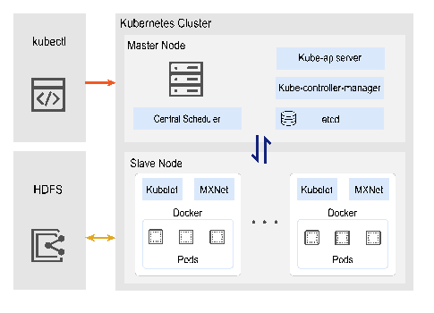
Fig. 2. Implement of the testbed.
图 2. 测试床实现。
原 PDF p.10B. Experimental Setup
B. 实验配置
TABLE II. DL JOBS USED FOR EXPERIMENTS
表 II. 实验使用的深度学习任务。
原 PDF p.10| Model | Dataset | Samples / Data chunks | Batch size / Tensor size (MB) |
|---|---|---|---|
| ResNet-50 [44] | CIFAR10 | 60000 / 27 | 64 / 97.4 |
| ResNet-101 | CIFAR10 | 60000 / 27 | 64 / 169.9 |
| GoogLeNet [45] | Caltech101 | 9145 / 115 | 128 / 25.9 |
| LeNet [46] | Caltech101 | 9145 / 115 | 128 / 28.3 |
| AlexNet | Tiny-ImageNet [47] | 100000 / 150 | 128 / 237.9 |
| Inception-BN | Tiny-ImageNet | 100000 / 150 | 128 / 42.9 |
| 模型 | 数据集 | 样本数 / 数据块数 | 批大小 / 张量大小（MB） |
|---|---|---|---|
| ResNet-50 [44] | CIFAR10 | 60,000 / 27 | 64 / 97.4 |
| ResNet-101 | CIFAR10 | 60,000 / 27 | 64 / 169.9 |
| GoogLeNet [45] | Caltech101 | 9,145 / 115 | 128 / 25.9 |
| LeNet [46] | Caltech101 | 9,145 / 115 | 128 / 28.3 |
| AlexNet | Tiny-ImageNet [47] | 100,000 / 150 | 128 / 237.9 |
| Inception-BN | Tiny-ImageNet | 100,000 / 150 | 128 / 42.9 |
Testbed Setup: Six types of DL jobs are presented in Table II. In addition, each worker or PS of jobs is implemented on a Docker container. The resources of each worker/PS are randomly chosen within the integer set [0,1] GPU, [1, 3] CPU cores and [2,6] RAM. The number of epochs $E_i$ for jobs will be set to 20 or 30. In addition, we can obtain the processing capacity of workers ($P_i$) through pre-training. The time span of each experiment is 50 time slots, each is set to 20 minutes. In the experiments, we assume that there are 10 jobs, which will arrive randomly in the first 40 time slots. Typically, each job takes 2 to 4 hours to run. Other settings are consistent with the settings in the following simulator.
测试床配置。 表 II 列出六类深度学习任务。每个任务的工作节点或 PS 都部署在 Docker 容器中。每个工作节点/PS 的资源在整数区间中随机选择：GPU 为 [0,1]，CPU 核心为 [1,3]，RAM 为 [2,6] GB。任务训练轮数 $E_i$ 设为 20 或 30。通过预训练获得工作节点处理能力 $P_i$。每次实验持续 50 个时间槽，每个时间槽为 20 分钟。实验中假设有 10 个任务在最初 40 个时间槽内随机到达，每个任务通常需要运行 2 至 4 小时。其他设置与下述模拟器一致。
原 PDF p.10Simulator: We design a MATLAB simulator to evaluate Eris’s effectiveness at a larger scale setting by leveraging jobs’ traces from our testbed. By default, there are 50 (R) sites. And 100 (I) jobs randomly arrive in 150 (T) time slots. We simulate all job events in simulator, including job arrival, completion time and corresponding resource occupation. To cater the large scale, we increase the resource configuration of each site. We set resource configuration of each site as following: 24 CPUs cores, 4 GPUs and 32 GB RAM. The overall budget of data transmission per slot is set to 20 GB. Then we set the utility function as
模拟器。 作者使用 MATLAB 模拟器，在更大规模场景下评估 Eris，并利用测试床任务轨迹。默认设置为 50 个站点（$R$）和 100 个任务（$I$）；任务在 150 个时间槽（$T$）内随机到达。模拟所有任务事件，包括任务到达、完成时间和相应资源占用。为适应大规模设置，提高每个站点的资源配置：24 个 CPU 核心、4 个 GPU 和 32 GB RAM。每个时间槽的总数据传输预算设为 20 GB。效用函数设为
原 PDF p.10[24], where $\tau_i$ is a latency-sensitive factor in [1,2]. Accordingly, we set the value of $\gamma_d$ and $\gamma_k$ to 1000, i.e., the price functions are set as
其中 $\tau_i\in[1,2]$ 为时延敏感因子。相应地，$\gamma_d$ 和 $\gamma_k$ 均设为 1000，即价格函数为
原 PDF p.11Baselines: To evaluate the superiority of Eris, we implement three following representative schedulers:
基线算法。 为评估 Eris 的优势，作者实现了以下三个代表性调度器：
原 PDF p.11Tiresias [11]: a preemptive scheduler attempts to minimize average Job completion time. Tiresias allocates resources for jobs based on the number of resources, (e.g., GPUs) and the multiplication of the job’s remaining workload. AntMan [22]: a cluster scheduler, which introduces two types of jobs: opportunistic job and resource-guarantee job. AntMan schedules resource-guarantee jobs first and allocates sufficient GPU resources to them. For opportunistic jobs, AntMan aims to utilize free resources to the best of its ability. Resource-guarantee jobs that suffer long queuing delay will be automatically executed as opportunistic jobs. Liquid [23]: a cluster network-efficient scheduler. Liquid tends to use the network communication cost and resource scheduling plans to obtain the best trade-off, that is, $\min\lambda*\mathrm{cost}_k+(1-\lambda)*\sum_j\mathrm{scheduling\_plan}_j$ , where $\mathrm{scheduling\_plan}_j$ mainly indicates the number of workers used for the job.
- Tiresias [11]： 一种抢占式调度器，尝试最小化平均任务完成时间。它根据资源数量（例如 GPU 数）和任务剩余工作负载的乘积为任务分配资源。
- AntMan [22]： 一种集群调度器，将任务分为机会型任务和资源保证型任务。AntMan 优先调度资源保证型任务，为其分配充足 GPU 资源；对机会型任务，则尽可能利用空闲资源。若资源保证型任务排队时间过长，会自动作为机会型任务执行。
- Liquid [23]： 一种面向网络效率的集群调度器。Liquid 根据网络通信成本和资源调度方案进行权衡，以获得较优配置，其目标形式为 $\min \lambda^*\mathrm{cost}_k+(1-\lambda)\sum_j\mathrm{scheduling\_plan}_j$；其中 $\mathrm{scheduling\_plan}_j$ 主要表示任务使用的工作节点数。
Note that AntMan and Liquid will assign the fixed number of workers and PSs for each new arrival job according to the unit price of worker at job’s arrival time $a_i$ , i.e., $\sum_{k\in K}w_i^k\beta_r^k(a_i)$. Accordingly, to reduce data transmission consumption, the training data of each new arrival job will be re-distributed evenly and greedily to sites. For Tiresias, there exists an extreme case that job’s payoff is smaller than 0 due to frequent preemption. We adopt it by omitting those jobs with negative payoff.
AntMan 和 Liquid 会根据任务到达时间 $a_i$ 的工作节点单位价格 $\sum_{k\in K}w_i^k\beta_r^k(a_i)$，为每个新到达任务分配固定数量的工作节点和 PS。为减少数据传输消耗，它们会将每个新任务的训练数据平均且贪心地重新分配到各站点。对 Tiresias，存在任务因频繁抢占而收益为负的极端情况；模拟时通过剔除这类负收益任务来处理。
原 PDF p.11C. Evaluation Results
C. 评估结果
1) Eris in Testbed Experiments: In the experiments, we depict the total social welfare of four algorithms and the optimal solution in Fig. 3, which indicates that Eris still get a good performance than three baselines. Note that the optimal solution is obtained by leveraging MATLAB optimization toolbox. Besides, we use a supplementary metric (the number of rejected jobs) to assess and validate the algorithm’s effectiveness. This metric provides a clear indication of the scheduling algorithms’ efficiency under limited resources, elucidating how Eris achieves nearly-optimal social welfare. The results in Fig. 4 show that under the same resource condition, Eris can allocate resources for ML jobs more optimally than baselines, leading to the acceptance of more jobs (and the refusal of fewer).
1）测试床实验中的 Eris。 实验比较四种算法及最优解的总社会福利（图 3）。结果显示，Eris 仍取得较好的性能；最优解由 MATLAB 优化工具箱求得。此外，作者用拒绝任务数这一补充指标评估调度算法在资源受限时的效率。图 4 显示，在资源条件相同的情况下，Eris 能更优地为机器学习任务分配资源，因此能接受更多任务、拒绝更少任务。
原 PDF p.11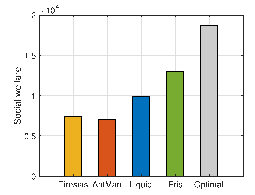
Fig. 3. Total social welfare.
图 3. 总社会福利。
原 PDF p.11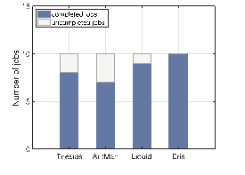
Fig. 4. # of submitted jobs.
图 4. 提交任务数。
原 PDF p.11The performance ratio of Eris with baselines are presented in welfare of the offline optimal solution to the social welfare of the target algorithm. This ratio is greater than 1, and if the ratio is near (far) 1, it means the algorithm performs well (poor) when compared to the optimal. In Fig. 5, we can see that Eris achieves a small performance ratio (< 1.5), which coincides with the theoretical analysis in Theorem 5.
图 5 展示 Eris 相对于基线的性能比，定义为离线最优解社会福利与目标算法社会福利之比。该比值大于 1；越接近 1 表示算法相对最优解表现越好，越远离 1 则表现越差。图 5 中 Eris 的性能比小于 1.5，与定理 5 的理论分析一致。
原 PDF p.11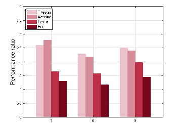
Fig. 5. Performance ratio.
图 5. 性能比。
原 PDF p.11In Fig. 6, we show the accuracy of three respective datasets. Especially, we increase the number of epochs from 20 ∼ 30 (default values) to 40 to illustrate the dynamic deployment of workers would not affect the training process, and can still guarantee a good performance.
图 6 展示三个相应数据集上的准确率。作者将训练轮数从 20–30（默认值）增加到 40，以说明动态部署工作节点不会影响训练过程，且仍能保证良好性能。
原 PDF p.11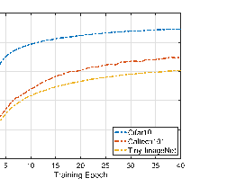
Fig. 6. Training accuracy.
图 6. 训练准确率。
原 PDF p.112) Eris in Large-Scaled Simulations: We evaluate the scalability of Eris in the case of submitting numerous jobs in a cluster with hundreds of sites. Figs. 8 and 9 show the total social welfare under different I and R, respectively. From these two figures, one can observe that Eris outperforms three schedulers, especially in a large scale setting. Therefore, we can claim that our algorithm Eris always outperforms three baselines regardless of the input scale. Furthermore, the social welfare of all algorithms in Fig. 8 increases with the number of sites as a result of increasing available resources. On the contrary, Fig. 9 shows that the social welfare of algorithms decreases with I . When the number of jobs submitted within a fixed period of time grows, it leads to a serious shortage of resources, resulting in fewer jobs completed.
2）大规模模拟中的 Eris。 作者评估 Eris 在数百个站点的集群中提交大量任务时的可扩展性。图 8、图 9 分别展示不同任务数 $I$ 和站点数 $R$ 下的总社会福利。可以看到，Eris 尤其在大规模场景下优于三种调度器。因此，作者认为，无论输入规模如何，Eris 都始终优于三种基线。图 8 中所有算法的社会福利随站点数增加而提高，这是可用资源增加的结果。相反，图 9 显示社会福利随 $I$ 增大而下降：固定时间内提交的任务越多，资源短缺越严重，完成的任务就越少。
原 PDF p.12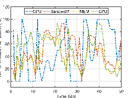
Fig. 7. Resource utilization.
图 7. 资源利用率。
原 PDF p.12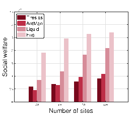
Fig. 8. Welfare under R.
图 8. 不同 $R$ 下的社会福利。
原 PDF p.12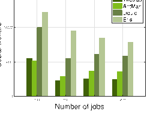
Fig. 9. Welfare under I.
图 9. 不同 $I$ 下的社会福利。
原 PDF p.12Here, Fig. 7 demonstrates more details about the normalized resource utilization of the entire testbed in each time slot during Eris’s execution. Note that the normalized resource utilization represents resource utilization divided by overall testbed capacity. Especially, we depict three main resources consumed: GPU, CPU and RAM. From Fig. 7, one can see that CPU and RAM occupation are relatively stable since the price mechanism can avoid those extreme cases as mush as possible. The normalized GPU utilization sometimes reaches up to 100% because of the insufficient number of GPUs.
图 7 更细致地展示 Eris 执行期间测试床每个时间槽的归一化资源利用率。归一化利用率是资源利用量除以整个测试床的容量。图中主要展示 GPU、CPU 和 RAM。CPU 和 RAM 占用相对稳定，因为价格机制尽可能避免极端情况；由于 GPU 数量不足，归一化 GPU 利用率有时达到 100%。
原 PDF p.12In Fig. 10, we plot the service provider’s profit across all algorithms. Notably, the profits decrease as the number of sites grows but rise with an increasing number of jobs. This is rationale because a provider with greater computational capacity aims to complete jobs as soon as possible to attract more users in the future, even if it means a reduced profit. Consequently, as the number of submitted jobs increases, so does the corresponding profit.
图 10 展示所有算法下服务提供商的利润。站点数增加时利润下降，任务数增加时利润上升。作者解释说，计算能力更强的提供商会力求尽快完成任务，以吸引未来更多用户，即使这意味着利润下降；因此，提交任务数量增加时，相应利润也会上升。
原 PDF p.12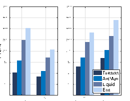
Fig. 10. Profit of the provider.
图 10. 服务提供商利润。
原 PDF p.12In addition, to analyze the impact of price functions, we further investigate the value of social welfare under different estimated values of $\gamma_d,\gamma_k$ . Note that we set the value of $\gamma_d$ and $\gamma_k$ to be the same. In Fig. 11, we observe that higher $\gamma_d$ ($\gamma_k$) leads to lower social welfare. This is because the price of unit resource $\alpha(t)$ ($\beta_r^k(t)$) increases more quickly when it meets a larger $\gamma_d$ ($\gamma_k$), shown in (6). In this regard, the sudden increase of price may exclude some jobs that should be accepted, leading to a smaller social welfare.
此外，为分析价格函数的影响，作者考察了不同估计参数 $\gamma_d,\gamma_k$ 下的社会福利，并令二者取相同值。图 11 显示，$\gamma_d$（或 $\gamma_k$）越高，社会福利越低。这是因为 $\gamma_d$（或 $\gamma_k$）越大，式 (6) 中单位资源价格 $\alpha(t)$（或 $\beta_r^k(t)$）上涨越快。价格突然升高可能排除本应被接受的任务，从而降低社会福利。
原 PDF p.12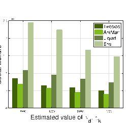
Fig. 11. Welfare under gamma_d, gamma_k.
图 11. 不同 $\gamma_d,\gamma_k$ 下的社会福利。
原 PDF p.12VII. CONCLUSION
VII. 结论
Unbiased distributed learning (UDL) is a new emerging learning paradigm, to guarantee the quality of smart IoT services. To address the new challenges of modeling and realizing UDL, we develop an online auction-based scheduling algorithm Eris. Eris computes the best schedule for UDL jobs by using a varying number of workers and PSs such that the social welfare can be maximized, meanwhile Eris dynamically adjusts resource prices based on current resource consumption. This is the first work which studies the joint problem of scheduling and pricing for supporting emerged AI applications with one specific technical concern (the unbiasedness of ML models). Rigorous theoretical analysis demonstrates that Eris achieves a good performance ratio within polynomial running time. Our evaluations show the superiority of Eris, and we observe that Eris can improve social welfare by up to 44% compared to three representative baselines.
无偏分布式学习（UDL）是一种新兴学习范式，可用于保证智能物联网服务质量。为应对 UDL 建模与实现的新挑战，本文提出在线拍卖调度算法 Eris。Eris 通过改变工作节点和 PS 的数量，为 UDL 任务计算最优调度，以最大化社会福利；同时根据当前资源消耗动态调整资源价格。这是首项研究调度与定价联合问题、以支持具有特定技术要求（机器学习模型无偏性）的新兴 AI 应用的工作。严格的理论分析表明，Eris 在多项式运行时间内实现良好的性能比。评估结果展示了 Eris 的优势：与三个代表性基线相比，Eris 的社会福利最高可提升 44%。
原 PDF p.12REFERENCES
参考文献
[1] Z. Zhou, X. Chen, E. Li, L. Zeng, K. Luo, and J. Zhang, “Edge intelligence: Paving the last mile of artificial intelligence with edge computing,” Proc. IEEE, vol. 107, no. 8, pp. 1738–1762, Aug. 2019.
[1] Z. Zhou, X. Chen, E. Li, L. Zeng, K. Luo, and J. Zhang, “Edge intelligence: Paving the last mile of artificial intelligence with edge computing,” Proc. IEEE, vol. 107, no. 8, pp. 1738–1762, Aug. 2019.
原 PDF p.13[2] A. Torralba and A. A. Efros, “Unbiased look at dataset bias,” in Proc. IEEE Conf. Comput. Vis. Pattern Recognit., 2011, pp. 1521–1528.
[2] A. Torralba and A. A. Efros, “Unbiased look at dataset bias,” in Proc. IEEE Conf. Comput. Vis. Pattern Recognit., 2011, pp. 1521–1528.
原 PDF p.13[3] X. Lyu, C. Ren, W. Ni, H. Tian, R. P. Liu, and E. Dutkiewicz, “Optimal online data partitioning for geo-distributed machine learning in edge of wireless networks,” IEEE J. Sel. Areas Commun., vol. 37, no. 10, pp. 2393–2406, Oct. 2019.
[3] X. Lyu, C. Ren, W. Ni, H. Tian, R. P. Liu, and E. Dutkiewicz, “Optimal online data partitioning for geo-distributed machine learning in edge of wireless networks,” IEEE J. Sel. Areas Commun., vol. 37, no. 10, pp. 2393–2406, Oct. 2019.
原 PDF p.13[4] G. Zhu, D. Liu, Y. Du, C. You, J. Zhang, and K. Huang, “Toward an intelligent edge: Wireless communication meets machine learning,” IEEE Commun. Mag., vol. 58, no. 1, pp. 19–25, Jan. 2020.
[4] G. Zhu, D. Liu, Y. Du, C. You, J. Zhang, and K. Huang, “Toward an intelligent edge: Wireless communication meets machine learning,” IEEE Commun. Mag., vol. 58, no. 1, pp. 19–25, Jan. 2020.
原 PDF p.13[5] J. Chen, K. Li, Q. Deng, K. Li, and S. Y. Philip, “Distributed deep learning model for intelligent video surveillance systems with edge computing,” IEEE Trans. Ind. Inform., early access, Apr. 04, 2019, doi: 10.1109/TII.2019.2909473.
[5] J. Chen, K. Li, Q. Deng, K. Li, and S. Y. Philip, “Distributed deep learning model for intelligent video surveillance systems with edge computing,” IEEE Trans. Ind. Inform., early access, Apr. 04, 2019, doi: 10.1109/TII.2019.2909473.
原 PDF p.13[6] X. Wang, Z. Ning, and L. Wang, “Offloading in Internet of Vehicles: A fogenabled real-time traffic management system,” IEEE Trans. Ind. Inform., vol. 14, no. 10, pp. 4568–4578, Oct. 2018.
[6] X. Wang, Z. Ning, and L. Wang, “Offloading in Internet of Vehicles: A fogenabled real-time traffic management system,” IEEE Trans. Ind. Inform., vol. 14, no. 10, pp. 4568–4578, Oct. 2018.
原 PDF p.13[7] Y. Liu, M. Peng, G. Shou, Y. Chen, and S. Chen, “Toward edge intelligence: Multiaccess edge computing for 5G and Internet of Things,” IEEE Internet Things J., vol. 7, no. 8, pp. 6722–6747, Aug. 2020.
[7] Y. Liu, M. Peng, G. Shou, Y. Chen, and S. Chen, “Toward edge intelligence: Multiaccess edge computing for 5G and Internet of Things,” IEEE Internet Things J., vol. 7, no. 8, pp. 6722–6747, Aug. 2020.
原 PDF p.13[8] Google Cloud TPU, 2017. [Online]. Available: https://cloud.google.com/ tpu
[8] Google Cloud TPU, 2017. [Online]. Available: https://cloud.google.com/ tpu
原 PDF p.13[9] Microsoft Azure machine learning, 2017. [Online]. Available: https:// azure.microsoft.com/en-us/overview/machine-learning/
[9] Microsoft Azure machine learning, 2017. [Online]. Available: https:// azure.microsoft.com/en-us/overview/machine-learning/
原 PDF p.13[10] A. Ghodsi, M. Zaharia, B. Hindman, A. Konwinski, S. Shenker, and I. Stoica, “Dominant resource fairness: Fair allocation of multiple resource types,” in Proc. 8th USENIX Conf. Netw. Syst. Des. Implementation, 2011, pp. 323–336.
[10] A. Ghodsi, M. Zaharia, B. Hindman, A. Konwinski, S. Shenker, and I. Stoica, “Dominant resource fairness: Fair allocation of multiple resource types,” in Proc. 8th USENIX Conf. Netw. Syst. Des. Implementation, 2011, pp. 323–336.
原 PDF p.13[11] J. Gu et al., “Tiresias: A GPU cluster manager for distributed deep learning,” in Proc. 16th USENIX Conf. Netw. Syst. Des. Implementation, 2019, pp. 485–500.
[11] J. Gu et al., “Tiresias: A GPU cluster manager for distributed deep learning,” in Proc. 16th USENIX Conf. Netw. Syst. Des. Implementation, 2019, pp. 485–500.
原 PDF p.13[12] Y. K. Tun, Y. M. Park, N. H. Tran, W. Saad, S. R. Pandey, and C. S. Hong, “Energy-efficient resource management in UAV-assisted mobile edge computing,” IEEE Commun. Lett., vol. 25, no. 1, pp. 249–253, Jan. 2021.
[12] Y. K. Tun, Y. M. Park, N. H. Tran, W. Saad, S. R. Pandey, and C. S. Hong, “Energy-efficient resource management in UAV-assisted mobile edge computing,” IEEE Commun. Lett., vol. 25, no. 1, pp. 249–253, Jan. 2021.
原 PDF p.13[13] U. Saleem, Y. Liu, S. Jangsher, Y. Li, and T. Jiang, “Mobility-aware joint task scheduling and resource allocation for cooperative mobile edge computing,” IEEE Trans. Wireless Commun., vol. 20, no. 1, pp. 360–374, Jan. 2021.
[13] U. Saleem, Y. Liu, S. Jangsher, Y. Li, and T. Jiang, “Mobility-aware joint task scheduling and resource allocation for cooperative mobile edge computing,” IEEE Trans. Wireless Commun., vol. 20, no. 1, pp. 360–374, Jan. 2021.
原 PDF p.13[14] H. A. Alameddine, S. Sharafeddine, S. Sebbah, S. Ayoubi, and C. Assi, “Dynamic task offloading and scheduling for low-latency IoT services in multi-access edge computing,” IEEE J. Sel. Areas Commun., vol. 37, no. 3, pp. 668–682, Mar. 2019.
[14] H. A. Alameddine, S. Sharafeddine, S. Sebbah, S. Ayoubi, and C. Assi, “Dynamic task offloading and scheduling for low-latency IoT services in multi-access edge computing,” IEEE J. Sel. Areas Commun., vol. 37, no. 3, pp. 668–682, Mar. 2019.
原 PDF p.13[15] Amazon SageMaker, 2018. [Online]. Available: https://aws.amazon.com/ sagemaker/developer-resources/
[15] Amazon SageMaker, 2018. [Online]. Available: https://aws.amazon.com/ sagemaker/developer-resources/
原 PDF p.13[16] B. Wu, X. Chen, Y. Chen, and Y. Lu, “A truthful auction mechanism for resource allocation in mobile edge computing,” in Proc. IEEE 22nd Int. Symp. World Wireless Mobile Multimedia Netw., 2021, pp. 21–30.
[16] B. Wu, X. Chen, Y. Chen, and Y. Lu, “A truthful auction mechanism for resource allocation in mobile edge computing,” in Proc. IEEE 22nd Int. Symp. World Wireless Mobile Multimedia Netw., 2021, pp. 21–30.
原 PDF p.13[17] J. Lin, L. Huang, H. Zhang, X. Yang, and P. Zhao, “A novel latencyguaranteed based resource double auction for market-oriented edge computing,” Comput. Netw., vol. 189, 2021, Art. no. 107873.
[17] J. Lin, L. Huang, H. Zhang, X. Yang, and P. Zhao, “A novel latencyguaranteed based resource double auction for market-oriented edge computing,” Comput. Netw., vol. 189, 2021, Art. no. 107873.
原 PDF p.13[18] F. Mashhadi, S. A. S. Monroy, A. Bozorgchenani, and D. Tarchi, “Optimal auction for delay and energy constrained task offloading in mobile edge computing,” Comput. Netw., vol. 183, 2020, Art. no. 107527.
[18] F. Mashhadi, S. A. S. Monroy, A. Bozorgchenani, and D. Tarchi, “Optimal auction for delay and energy constrained task offloading in mobile edge computing,” Comput. Netw., vol. 183, 2020, Art. no. 107527.
原 PDF p.13[19] W. Shi, L. Zhang, C. Wu, Z. Li, and F. C. Lau, “An online auction framework for dynamic resource provisioning in cloud computing,” in Proc. ACM Int. Conf. Meas. Model. Comput. Syst., 2014, pp. 71–83.
[19] W. Shi, L. Zhang, C. Wu, Z. Li, and F. C. Lau, “An online auction framework for dynamic resource provisioning in cloud computing,” in Proc. ACM Int. Conf. Meas. Model. Comput. Syst., 2014, pp. 71–83.
原 PDF p.13[20] H. Zhang, H. Jiang, B. Li, F. Liu, A. V. Vasilakos, and J. Liu, “A framework for truthful online auctions in cloud computing with heterogeneous user demands,” IEEE Trans. Comput., vol. 65, no. 3, pp. 805–818, Mar. 2016.
[20] H. Zhang, H. Jiang, B. Li, F. Liu, A. V. Vasilakos, and J. Liu, “A framework for truthful online auctions in cloud computing with heterogeneous user demands,” IEEE Trans. Comput., vol. 65, no. 3, pp. 805–818, Mar. 2016.
原 PDF p.13[21] S. Li, J. Huang, and B. Cheng, “A price-incentive resource auction mechanism balancing the interests between users and cloud service provider,” IEEE Trans. Netw. Service Manag., vol. 18, no. 2, pp. 2030–2045, Jun. 2021.
[21] S. Li, J. Huang, and B. Cheng, “A price-incentive resource auction mechanism balancing the interests between users and cloud service provider,” IEEE Trans. Netw. Service Manag., vol. 18, no. 2, pp. 2030–2045, Jun. 2021.
原 PDF p.13[22] W. Xiao et al., “AntMan: Dynamic scaling on GPU clusters for deep learning,” in Proc. 14th USENIX Conf. Operating Syst. Des. Implementation, 2020, Art. no. 30.
[22] W. Xiao et al., “AntMan: Dynamic scaling on GPU clusters for deep learning,” in Proc. 14th USENIX Conf. Operating Syst. Des. Implementation, 2020, Art. no. 30.
原 PDF p.13[23] R. Gu et al., “Liquid: Intelligent resource estimation and network-efficient scheduling for deep learning jobs on distributed GPU clusters,” IEEE Trans. Parallel Distrib. Syst., vol. 33, no. 11, pp. 2808–2820, Nov. 2022.
[23] R. Gu et al., “Liquid: Intelligent resource estimation and network-efficient scheduling for deep learning jobs on distributed GPU clusters,” IEEE Trans. Parallel Distrib. Syst., vol. 33, no. 11, pp. 2808–2820, Nov. 2022.
原 PDF p.13[24] Y. Bao, Y. Peng, C. Wu, and Z. Li, “Online job scheduling in distributed machine learning clusters,” in Proc. IEEE Conf. Comput. Commun., 2018, pp. 495–503.
[24] Y. Bao, Y. Peng, C. Wu, and Z. Li, “Online job scheduling in distributed machine learning clusters,” in Proc. IEEE Conf. Comput. Commun., 2018, pp. 495–503.
原 PDF p.13[25] Q. Zhang, R. Zhou, C. Wu, L. Jiao, and Z. Li, “Online scheduling of heterogeneous distributed machine learning jobs,” in Proc. 21st Int. Symp. Theory Algorithmic Found. Protocol Des. Mobile Netw. Mobile Comput., 2020, pp. 111–120.
[25] Q. Zhang, R. Zhou, C. Wu, L. Jiao, and Z. Li, “Online scheduling of heterogeneous distributed machine learning jobs,” in Proc. 21st Int. Symp. Theory Algorithmic Found. Protocol Des. Mobile Netw. Mobile Comput., 2020, pp. 111–120.
原 PDF p.13[26] Y. Peng, Y. Bao, Y. Chen, C. Wu, and C. Guo, “Optimus: An efficient dynamic resource scheduler for deep learning clusters,” in Proc. 13th EuroSys Conf., 2018, Art. no. 3.
[26] Y. Peng, Y. Bao, Y. Chen, C. Wu, and C. Guo, “Optimus: An efficient dynamic resource scheduler for deep learning clusters,” in Proc. 13th EuroSys Conf., 2018, Art. no. 3.
原 PDF p.13[27] R. Zhou et al., “Online scheduling algorithm for heterogeneous distributed machine learning jobs,” IEEE Trans. Cloud Comput., vol. 11, no. 2, pp. 1514–1529, Second Quarter 2023.
[27] R. Zhou et al., “Online scheduling algorithm for heterogeneous distributed machine learning jobs,” IEEE Trans. Cloud Comput., vol. 11, no. 2, pp. 1514–1529, Second Quarter 2023.
原 PDF p.13[28] R. Zhou, N. Wang, Y. Huang, J. Pang, and H. Chen, “DPS: Dynamic pricing and scheduling for distributed machine learning jobs in edge-cloud networks,” IEEE Trans. Mobile Comput., vol. 22, no. 11, pp. 6377–6393, Nov. 2023.
[28] R. Zhou, N. Wang, Y. Huang, J. Pang, and H. Chen, “DPS: Dynamic pricing and scheduling for distributed machine learning jobs in edge-cloud networks,” IEEE Trans. Mobile Comput., vol. 22, no. 11, pp. 6377–6393, Nov. 2023.
原 PDF p.13[29] J. Pang, Z. Han, R. Zhou, H. Tan, and Y. Cao, “Online scheduling algorithms for unbiased distributed learning over wireless edge networks,” J. Syst. Archit., vol. 131, 2022, Art. no. 102673.
[29] J. Pang, Z. Han, R. Zhou, H. Tan, and Y. Cao, “Online scheduling algorithms for unbiased distributed learning over wireless edge networks,” J. Syst. Archit., vol. 131, 2022, Art. no. 102673.
原 PDF p.13[30] J. Zhang, X. Yang, N. Xie, X. Zhang, A. V. Vasilakos, and W. Li, “An online auction mechanism for time-varying multidimensional resource allocation in clouds,” Future Gener. Comput. Syst., vol. 111, pp. 27–38, 2020.
[30] J. Zhang, X. Yang, N. Xie, X. Zhang, A. V. Vasilakos, and W. Li, “An online auction mechanism for time-varying multidimensional resource allocation in clouds,” Future Gener. Comput. Syst., vol. 111, pp. 27–38, 2020.
原 PDF p.13[31] J. Pang, J. Yu, R. Zhou, and J. C. Lui, “An incentive auction for heterogeneous client selection in federated learning,” IEEE Trans. Mobile Comput., vol. 22, no. 10, pp. 5733–5750, Oct. 2023.
[31] J. Pang, J. Yu, R. Zhou, and J. C. Lui, “An incentive auction for heterogeneous client selection in federated learning,” IEEE Trans. Mobile Comput., vol. 22, no. 10, pp. 5733–5750, Oct. 2023.
原 PDF p.13[32] R. Zhou, J. Pang, Z. Wang, J. C. Lui, and Z. Li, “A truthful procurement auction for incentivizing heterogeneous clients in federated learning,” in Proc. IEEE 41st Int. Conf. Distrib. Comput. Syst., 2021, pp. 183–193.
[32] R. Zhou, J. Pang, Z. Wang, J. C. Lui, and Z. Li, “A truthful procurement auction for incentivizing heterogeneous clients in federated learning,” in Proc. IEEE 41st Int. Conf. Distrib. Comput. Syst., 2021, pp. 183–193.
原 PDF p.13[33] Z. Han, R. Zhou, J. Pang, Y. Cao, and H. Tan, “Online scheduling unbiased distributed learning over wireless edge networks,” in Proc. IEEE 27th Int. Conf. Parallel Distrib. Syst., 2021, pp. 599–606.
[33] Z. Han, R. Zhou, J. Pang, Y. Cao, and H. Tan, “Online scheduling unbiased distributed learning over wireless edge networks,” in Proc. IEEE 27th Int. Conf. Parallel Distrib. Syst., 2021, pp. 599–606.
原 PDF p.13[34] L. Chen, W. Cui, B. Li, and B. Li, “Optimizing coflow completion times with utility max-min fairness,” in Proc. IEEE Conf. Comput. Commun., 2016, pp. 1–9.
[34] L. Chen, W. Cui, B. Li, and B. Li, “Optimizing coflow completion times with utility max-min fairness,” in Proc. IEEE Conf. Comput. Commun., 2016, pp. 1–9.
原 PDF p.13[35] Z. Huang, B. Balasubramanian, M. Wang, T. Lan, M. Chiang, and D. H. Tsang, “Need for speed: CORA scheduler for optimizing completiontimes in the cloud,” in Proc. IEEE Conf. Comput. Commun., 2015, pp. 891–899.
[35] Z. Huang, B. Balasubramanian, M. Wang, T. Lan, M. Chiang, and D. H. Tsang, “Need for speed: CORA scheduler for optimizing completiontimes in the cloud,” in Proc. IEEE Conf. Comput. Commun., 2015, pp. 891–899.
原 PDF p.13[36] M. Li et al., “Scaling distributed machine learning with the parameter server,” in Proc. 11th USENIX Conf. Operating Syst. Des. Implementation, 2014, pp. 583–598.
[36] M. Li et al., “Scaling distributed machine learning with the parameter server,” in Proc. 11th USENIX Conf. Operating Syst. Des. Implementation, 2014, pp. 583–598.
原 PDF p.13[37] I. Cano, M. Weimer, D. Mahajan, C. Curino, and G. M. Fumarola, “Towards geo-distributed machine learning,” 2016, arXiv:1603.09035.
[37] I. Cano, M. Weimer, D. Mahajan, C. Curino, and G. M. Fumarola, “Towards geo-distributed machine learning,” 2016, arXiv:1603.09035.
原 PDF p.13[38] F. Yan, O. Ruwase, Y. He, and T. Chilimbi, “Performance modeling and scalability optimization of distributed deep learning systems,” in Proc. 21th ACM SIGKDD Int. Conf. Knowl. Discov. Data Mining, 2015, pp. 1355–1364.
[38] F. Yan, O. Ruwase, Y. He, and T. Chilimbi, “Performance modeling and scalability optimization of distributed deep learning systems,” in Proc. 21th ACM SIGKDD Int. Conf. Knowl. Discov. Data Mining, 2015, pp. 1355–1364.
原 PDF p.13[39] F. N. Iandola, M. W. Moskewicz, K. Ashraf, and K. Keutzer, “FireCaffe: Near-linear acceleration of deep neural network training on compute clusters,” in Proc. IEEE Conf. Comput. Vis. Pattern Recognit., 2016, pp. 2592–2600.
[39] F. N. Iandola, M. W. Moskewicz, K. Ashraf, and K. Keutzer, “FireCaffe: Near-linear acceleration of deep neural network training on compute clusters,” in Proc. IEEE Conf. Comput. Vis. Pattern Recognit., 2016, pp. 2592–2600.
原 PDF p.13[40] G. Hinton, N. Srivastava, and K. Swersky, “Neural networks for machine learning lecture 6a overview of mini-batch gradient descent,” Cited on, vol. 14, no. 8, pp. 2, 2012.
[40] G. Hinton, N. Srivastava, and K. Swersky, “Neural networks for machine learning lecture 6a overview of mini-batch gradient descent,” Cited on, vol. 14, no. 8, pp. 2, 2012.
原 PDF p.13[41] A. Schrijver, Theory of Linear and Integer Programming. Hoboken, NJ, USA: Wiley, 1998.
[41] A. Schrijver, Theory of Linear and Integer Programming. Hoboken, NJ, USA: Wiley, 1998.
原 PDF p.13[42] R. M. Karp, “Reducibility among combinatorial problems,” in Complexity of Computer Computations. Berlin, Germany: Springer, 1972, pp. 85–103.
[42] R. M. Karp, “Reducibility among combinatorial problems,” in Complexity of Computer Computations. Berlin, Germany: Springer, 1972, pp. 85–103.
原 PDF p.13[43] Z. Huang and A. Kim, “Welfare maximization with production costs: A primal dual approach,” in Proc. 26th Annu. ACM-SIAM Symp. Discrete Algorithms, 2015, pp. 59–72.
[43] Z. Huang and A. Kim, “Welfare maximization with production costs: A primal dual approach,” in Proc. 26th Annu. ACM-SIAM Symp. Discrete Algorithms, 2015, pp. 59–72.
原 PDF p.13[44] S. Xie, R. Girshick, P. Dollár, Z. Tu, and K. He, “Aggregated residual transformations for deep neural networks,” in Proc. IEEE Conf. Comput. Vis. Pattern Recognit., 2017, pp. 5987–5995.
[44] S. Xie, R. Girshick, P. Dollár, Z. Tu, and K. He, “Aggregated residual transformations for deep neural networks,” in Proc. IEEE Conf. Comput. Vis. Pattern Recognit., 2017, pp. 5987–5995.
原 PDF p.13[45] C. Szegedy et al., “Going deeper with convolutions,” in Proc. IEEE Conf. Comput. Vis. Pattern Recognit., 2015, pp. 1–9.
[45] C. Szegedy et al., “Going deeper with convolutions,” in Proc. IEEE Conf. Comput. Vis. Pattern Recognit., 2015, pp. 1–9.
原 PDF p.13[46] K. Simonyan and A. Zisserman, “Very deep convolutional networks for large-scale image recognition,” 2014, arXiv:1409.1556.
[46] K. Simonyan and A. Zisserman, “Very deep convolutional networks for large-scale image recognition,” 2014, arXiv:1409.1556.
原 PDF p.13[47] Tiny ImageNet visual recognition challenge, 2019. [Online]. Available: http://tiny-imagenet.herokuapp.com/
[47] Tiny ImageNet visual recognition challenge, 2019. [Online]. Available: http://tiny-imagenet.herokuapp.com/
原 PDF p.13Jinlong Pang received the BE degree from the School of Power and Machinery, and the second BE degree from the School of Computer both from Wuhan University, China, in 2019, and the ME degree from the School of Cyber Science and Engineering, Wuhan University, in 2022. Currently, he is working toward the PhD degree with the Department of Computer Science & Engineering, University of California, Santa Cruz. His current research interests include network economics, incentive mechanisms and algorithm optimization, both in the context of machine learning, especially distributed machine learning and federated learning.
Jinlong Pang 于 2019 年在中国武汉大学动力与机械学院和计算机学院分别获得学士学位，2022 年在武汉大学网络空间安全学院获得硕士学位。目前在加州大学圣克鲁兹分校计算机科学与工程系攻读博士学位。研究兴趣包括网络经济学、激励机制和算法优化，尤其是机器学习领域中的分布式机器学习与联邦学习。
原 PDF p.14Ziyi Han received the BE degree from the School of Cyber Science and Engineering, Wuhan University, China, in 2021. She is currently working toward the master’s degree with the School of Cyber Science and Engineering, Wuhan University. Her research interests include edge computing, online learning, and network optimization.
Ziyi Han 于 2021 年在中国武汉大学网络空间安全学院获得学士学位，目前在该院攻读硕士学位。研究兴趣包括边缘计算、在线学习和网络优化。
原 PDF p.14Ruiting Zhou (Member, IEEE) received the PhD degree from the Department of Computer Science, University of Calgary, Canada, in 2018. She is an associate professor with the School of Computer Science Engineering, Southeast University. Her research interests include cloud computing, machine learning, and mobile network optimization. She has published research papers in top-tier computer science conferences and journals, including IEEE INFOCOM, ACM MOBIHOC, IEEE/ACM Transactions on Networking, IEEE Journal on Selected Areas in Communications, IEEE Transactions on Mobile Computing. She serves as the TPC chair for INFOCOM workshop-ICCN 2019-2023.
Ruiting Zhou（IEEE Member） 于 2018 年在加拿大卡尔加里大学计算机科学系获得博士学位，现任东南大学计算机科学与工程学院副教授。研究兴趣包括云计算、机器学习和移动网络优化。她在 IEEE INFOCOM、ACM MOBIHOC、IEEE/ACM Transactions on Networking、IEEE Journal on Selected Areas in Communications、IEEE Transactions on Mobile Computing 等重要会议和期刊发表过论文。她担任 INFOCOM workshop-ICCN 2019–2023 的 TPC 主席，并为多个国际会议和期刊担任审稿人。
原 PDF p.14She also serves as a reviewer for international conferences and journals, such us IEEE ICDCS, IEEE/ACM IWQoS, IEEE SECON, IEEE Journal on Selected Areas in Communications, IEEE/ACM Transactions on Networking, IEEE Transactions on Mobile Computing, and IEEE Transactions on Cloud Computing.
【原文简介补全】她还为以下国际会议和期刊担任审稿人：IEEE ICDCS、IEEE/ACM IWQoS、IEEE SECON、IEEE Journal on Selected Areas in Communications、IEEE/ACM Transactions on Networking、IEEE Transactions on Mobile Computing 和 IEEE Transactions on Cloud Computing。
原 PDF p.14Renli Zhang received the BE degree in information security from Wuhan University, China, in 2020. He is currently working toward the MS degree with the School of Cyber Science and Engineering, Wuhan University. His research interests include UAV-enabled wireless networks, network optimization, and online scheduling.
Renli Zhang 于 2020 年在中国武汉大学获得信息安全学士学位，目前在武汉大学网络空间安全学院攻读硕士学位。研究兴趣包括无人机辅助无线网络、网络优化和在线调度。
原 PDF p.14John C.S. Lui (Fellow, IEEE) received the PhD degree in computer science from UCLA. He is currently the Choh-Ming Li chair professor with the Department of Computer Science and Engineering (CSE), The Chinese University of Hong Kong (CUHK). After his graduation, he joined the IBM Laboratory and participated in research and development projects on file systems and parallel I/O architectures. He later joined the CSE Department with CUHK. His current research interests are in online learning algorithms and applications (e.g., multi-armed bandits, reinforcement learning), machine learning on network sciences and networking systems, large scale data analytics, network/system security, network economics, large scale storage systems, and performance evaluation theory. He is an elected member of the IFIP WG 7.3, fellow of ACM, senior research fellow of the Croucher Foundation, fellow of the Hong Kong Academy of Engineering Sciences (HKAES).
John C. S. Lui（IEEE Fellow） 在加州大学洛杉矶分校获得计算机科学博士学位，现任香港中文大学计算机科学与工程系钟鸣李教授。毕业后曾加入 IBM 实验室，参与文件系统和并行 I/O 架构的研发项目，之后加入香港中文大学计算机科学与工程系。研究兴趣包括在线学习算法及应用（如多臂老虎机和强化学习）、网络科学与网络系统中的机器学习、大规模数据分析、网络/系统安全、网络经济学、大规模存储系统和性能评估理论。他是 IFIP WG 7.3 民选成员、ACM Fellow、邱氏基金会高级研究员及香港工程科学院院士。
原 PDF p.14Hao Chen received the PhD degree in electronic science and engineering from Southeast University, in 2012. Currently, he is a senior engineer with Huawei Nanjing Research Institute, Nanjing, China. His research interests include storage network and resource management in cloud computing environment.
Hao Chen 于 2012 年在东南大学获得电子科学与工程博士学位，目前是华为南京研究所高级工程师。研究兴趣包括云计算环境中的存储网络和资源管理。
原 PDF p.14